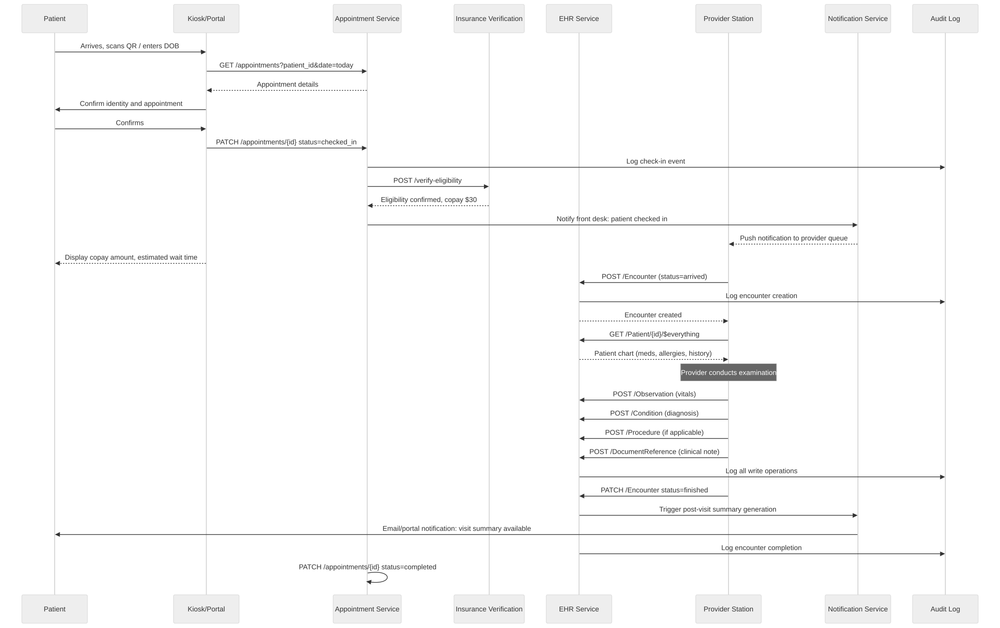
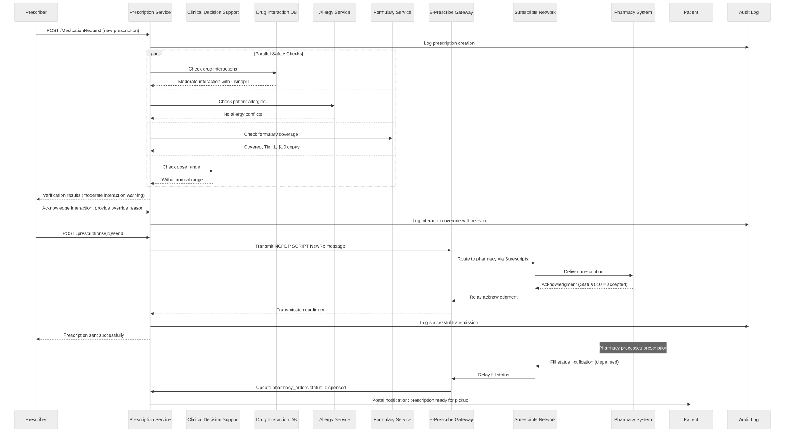
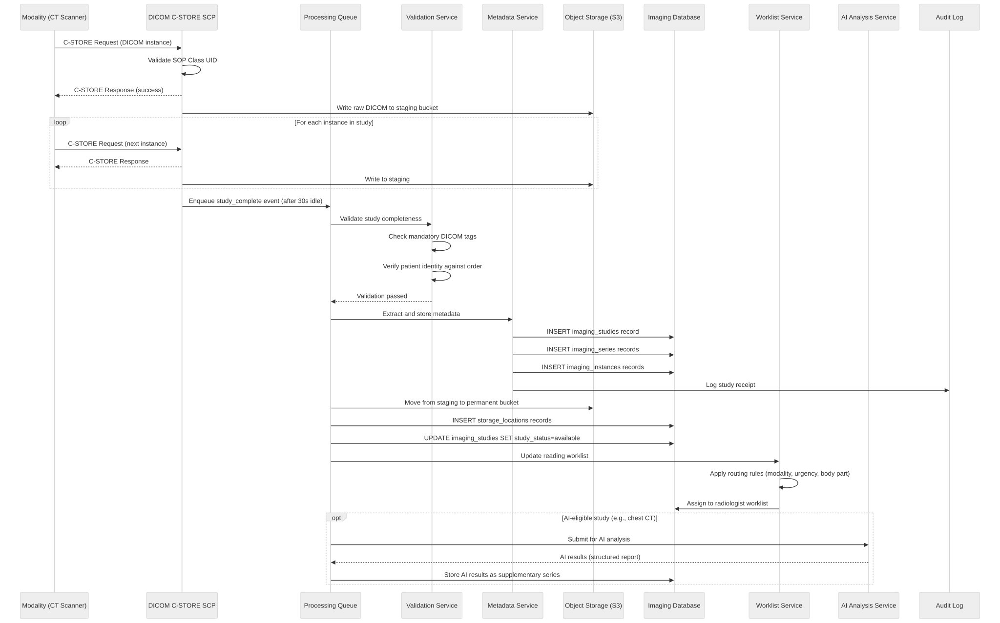
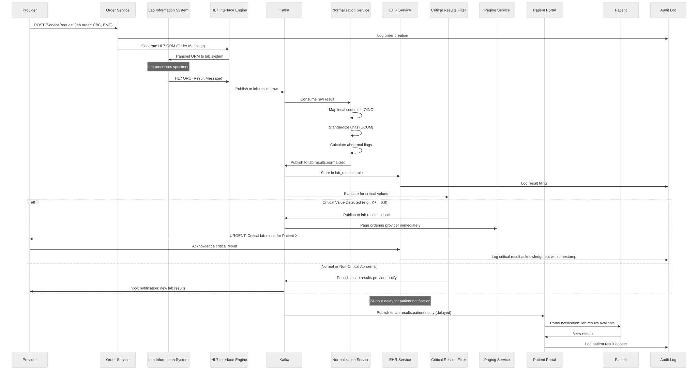

Part Context
Part: Part 5 - Real-World System Design Examples
Position: Chapter 31 of 60
Why this part exists: This section translates distributed-systems theory into realistic product designs across consumer apps, marketplaces, media, payments, search, notifications, collaboration, infrastructure, and operations-heavy platforms.
Overview
Healthcare systems carry regulated data, durable clinical records, and auditability requirements that frequently outweigh raw throughput concerns. They also integrate with external providers, imaging systems, and appointment workflows.
This chapter brings healthcare into the system-design curriculum so the reader can see how compliance, data retention, and interoperability reshape standard product patterns.
Why This Domain Matters in Real Systems
- Healthcare is an excellent domain for studying privacy, data residency, and operational reliability.
- It contains a mix of transactional booking, document storage, eventing, and regulated identity concerns.
- The domain helps architects reason about integration-heavy systems with strict correctness and audit demands.
- It also illustrates why domain language matters as much as technology choices.
Real-World Examples and Comparisons
- This domain repeatedly appears in systems such as Epic, Cerner, Practo, Teladoc, PACS vendors.
- Startups typically collapse many of these capabilities into a smaller number of services, while platform-scale companies split them into specialized ownership boundaries with stronger internal contracts.
- The architectural shape changes across B2C, B2B, and regulated deployments, but the key trade-offs around latency, correctness, and operability remain recognizable.
Domain Architecture Map

Cross-Cutting Design Themes
- Separate user-facing hot paths from heavy asynchronous work such as analytics, indexing, compliance review, or backfills.
- Be explicit about which parts of the domain need strong correctness and which can tolerate eventual consistency.
- Model operator workflows and reconciliation early; real systems are maintained, not only executed.
- Use events and materialized views deliberately so teams can scale read models without overloading the transactional path.
14.1 Clinical and Patient Systems
14.1 Clinical and Patient Systems collects the boundaries around Electronic Health Records (EHR), Appointment Booking System, Telemedicine System and related capabilities in Healthcare Systems. Teams usually start with a simpler combined service, then split these systems once data ownership, latency goals, or operator workflows begin to conflict.
Electronic Health Records (EHR)
Overview
Electronic Health Records (EHR) is the domain boundary responsible for owning a canonical content or entity model that many downstream systems depend on for reads. In Healthcare Systems, this system usually has to balance direct user experience with downstream effects on adjacent systems in 14.1 Clinical and Patient Systems.
Real-world examples
- Comparable patterns appear in Epic, Cerner, Practo.
- Startups often keep Electronic Health Records (EHR) inside a larger service, while large platforms split it out once ownership, scale, or correctness requirements diverge.
- The exact implementation changes between B2C, B2B, and regulated variants, but the architectural boundary stays useful.
Requirements and workflows
- Expose APIs or events that let product users, internal operators, and downstream consumers create, update, query, and reconcile electronic health records (ehr) state.
- Support synchronous user-facing flows for the hot path and asynchronous processing for enrichment, retries, and downstream propagation.
- Preserve a clear state model so support teams and automated workflows can explain why the system is in its current state.
- Provide audit or analytics hooks without coupling reporting latency to the primary user journey.
Architecture, data, and APIs
- Model the write path around versioned entities, metadata, access policies, denormalized read models, and change events.
- Keep a normalized source of truth for critical state and publish derived read models or events for consumer services.
- Use caches, projections, or search indexes only for latency-sensitive reads; treat rebuildability as a design requirement.
- Define idempotent write contracts, versioned events, and explicit ownership boundaries so dependent systems can evolve safely.
Scaling, reliability, and operations
- Watch for schema drift, stale read models, hot entities, invalid content, and permission mismatch.
- Protect hot partitions with rate limiting, request coalescing, queue buffering, and selective denormalization where appropriate.
- Design operator dashboards, replay tooling, and reconciliation or backfill workflows before incidents force them into existence.
- Track service-level indicators for latency, success, queue lag, freshness, and correctness signals instead of only infrastructure health.
Trade-offs and interview notes
- The key interview move is to explain why Electronic Health Records (EHR) deserves its own boundary and what can remain eventual around it.
- Strong answers call out what requires strong correctness versus what can be computed asynchronously.
- Weak answers collapse storage, orchestration, and downstream fan-out into one service without discussing scale or failure modes.
Appointment Booking System
Overview
Appointment Booking System is the domain boundary responsible for orchestrating a multi-step workflow that spans validation, state transitions, external dependencies, and operator visibility. In Healthcare Systems, this system usually has to balance direct user experience with downstream effects on adjacent systems in 14.1 Clinical and Patient Systems.
Real-world examples
- Comparable patterns appear in Epic, Cerner, Practo.
- Startups often keep Appointment Booking System inside a larger service, while large platforms split it out once ownership, scale, or correctness requirements diverge.
- The exact implementation changes between B2C, B2B, and regulated variants, but the architectural boundary stays useful.
Requirements and workflows
- Expose APIs or events that let product users, internal operators, and downstream consumers create, update, query, and reconcile appointment booking system state.
- Support synchronous user-facing flows for the hot path and asynchronous processing for enrichment, retries, and downstream propagation.
- Preserve a clear state model so support teams and automated workflows can explain why the system is in its current state.
- Provide audit or analytics hooks without coupling reporting latency to the primary user journey.
Architecture, data, and APIs
- Model the write path around workflow state, submitted forms, resource locks, side-effect intents, and audit events.
- Keep a normalized source of truth for critical state and publish derived read models or events for consumer services.
- Use caches, projections, or search indexes only for latency-sensitive reads; treat rebuildability as a design requirement.
- Define idempotent write contracts, versioned events, and explicit ownership boundaries so dependent systems can evolve safely.
Scaling, reliability, and operations
- Watch for partial success, duplicate submission, timeout ambiguity, and compensation complexity.
- Protect hot partitions with rate limiting, request coalescing, queue buffering, and selective denormalization where appropriate.
- Design operator dashboards, replay tooling, and reconciliation or backfill workflows before incidents force them into existence.
- Track service-level indicators for latency, success, queue lag, freshness, and correctness signals instead of only infrastructure health.
Trade-offs and interview notes
- The key interview move is to explain why Appointment Booking System deserves its own boundary and what can remain eventual around it.
- Strong answers call out what requires strong correctness versus what can be computed asynchronously.
- Weak answers collapse storage, orchestration, and downstream fan-out into one service without discussing scale or failure modes.
Telemedicine System
Overview
Telemedicine System is the domain boundary responsible for owning a clear domain boundary with its own state model, APIs, and operational SLOs. In Healthcare Systems, this system usually has to balance direct user experience with downstream effects on adjacent systems in 14.1 Clinical and Patient Systems.
Real-world examples
- Comparable patterns appear in Epic, Cerner, Practo.
- Startups often keep Telemedicine System inside a larger service, while large platforms split it out once ownership, scale, or correctness requirements diverge.
- The exact implementation changes between B2C, B2B, and regulated variants, but the architectural boundary stays useful.
Requirements and workflows
- Expose APIs or events that let product users, internal operators, and downstream consumers create, update, query, and reconcile telemedicine system state.
- Support synchronous user-facing flows for the hot path and asynchronous processing for enrichment, retries, and downstream propagation.
- Preserve a clear state model so support teams and automated workflows can explain why the system is in its current state.
- Provide audit or analytics hooks without coupling reporting latency to the primary user journey.
Architecture, data, and APIs
- Model the write path around normalized transactional state, denormalized read models, events, and audit records.
- Keep a normalized source of truth for critical state and publish derived read models or events for consumer services.
- Use caches, projections, or search indexes only for latency-sensitive reads; treat rebuildability as a design requirement.
- Define idempotent write contracts, versioned events, and explicit ownership boundaries so dependent systems can evolve safely.
Scaling, reliability, and operations
- Watch for hotspots, stale projections, ambiguous retries, and under-specified operator workflows.
- Protect hot partitions with rate limiting, request coalescing, queue buffering, and selective denormalization where appropriate.
- Design operator dashboards, replay tooling, and reconciliation or backfill workflows before incidents force them into existence.
- Track service-level indicators for latency, success, queue lag, freshness, and correctness signals instead of only infrastructure health.
Trade-offs and interview notes
- The key interview move is to explain why Telemedicine System deserves its own boundary and what can remain eventual around it.
- Strong answers call out what requires strong correctness versus what can be computed asynchronously.
- Weak answers collapse storage, orchestration, and downstream fan-out into one service without discussing scale or failure modes.
Medical Imaging Storage System
Overview
Medical Imaging Storage System is the domain boundary responsible for owning a clear domain boundary with its own state model, APIs, and operational SLOs. In Healthcare Systems, this system usually has to balance direct user experience with downstream effects on adjacent systems in 14.1 Clinical and Patient Systems.
Real-world examples
- Comparable patterns appear in Epic, Cerner, Practo.
- Startups often keep Medical Imaging Storage System inside a larger service, while large platforms split it out once ownership, scale, or correctness requirements diverge.
- The exact implementation changes between B2C, B2B, and regulated variants, but the architectural boundary stays useful.
Requirements and workflows
- Expose APIs or events that let product users, internal operators, and downstream consumers create, update, query, and reconcile medical imaging storage system state.
- Support synchronous user-facing flows for the hot path and asynchronous processing for enrichment, retries, and downstream propagation.
- Preserve a clear state model so support teams and automated workflows can explain why the system is in its current state.
- Provide audit or analytics hooks without coupling reporting latency to the primary user journey.
Architecture, data, and APIs
- Model the write path around normalized transactional state, denormalized read models, events, and audit records.
- Keep a normalized source of truth for critical state and publish derived read models or events for consumer services.
- Use caches, projections, or search indexes only for latency-sensitive reads; treat rebuildability as a design requirement.
- Define idempotent write contracts, versioned events, and explicit ownership boundaries so dependent systems can evolve safely.
Scaling, reliability, and operations
- Watch for hotspots, stale projections, ambiguous retries, and under-specified operator workflows.
- Protect hot partitions with rate limiting, request coalescing, queue buffering, and selective denormalization where appropriate.
- Design operator dashboards, replay tooling, and reconciliation or backfill workflows before incidents force them into existence.
- Track service-level indicators for latency, success, queue lag, freshness, and correctness signals instead of only infrastructure health.
Trade-offs and interview notes
- The key interview move is to explain why Medical Imaging Storage System deserves its own boundary and what can remain eventual around it.
- Strong answers call out what requires strong correctness versus what can be computed asynchronously.
- Weak answers collapse storage, orchestration, and downstream fan-out into one service without discussing scale or failure modes.
Prescription Management System
Overview
Prescription Management System is the domain boundary responsible for owning a clear domain boundary with its own state model, APIs, and operational SLOs. In Healthcare Systems, this system usually has to balance direct user experience with downstream effects on adjacent systems in 14.1 Clinical and Patient Systems.
Real-world examples
- Comparable patterns appear in Epic, Cerner, Practo.
- Startups often keep Prescription Management System inside a larger service, while large platforms split it out once ownership, scale, or correctness requirements diverge.
- The exact implementation changes between B2C, B2B, and regulated variants, but the architectural boundary stays useful.
Requirements and workflows
- Expose APIs or events that let product users, internal operators, and downstream consumers create, update, query, and reconcile prescription management system state.
- Support synchronous user-facing flows for the hot path and asynchronous processing for enrichment, retries, and downstream propagation.
- Preserve a clear state model so support teams and automated workflows can explain why the system is in its current state.
- Provide audit or analytics hooks without coupling reporting latency to the primary user journey.
Architecture, data, and APIs
- Model the write path around normalized transactional state, denormalized read models, events, and audit records.
- Keep a normalized source of truth for critical state and publish derived read models or events for consumer services.
- Use caches, projections, or search indexes only for latency-sensitive reads; treat rebuildability as a design requirement.
- Define idempotent write contracts, versioned events, and explicit ownership boundaries so dependent systems can evolve safely.
Scaling, reliability, and operations
- Watch for hotspots, stale projections, ambiguous retries, and under-specified operator workflows.
- Protect hot partitions with rate limiting, request coalescing, queue buffering, and selective denormalization where appropriate.
- Design operator dashboards, replay tooling, and reconciliation or backfill workflows before incidents force them into existence.
- Track service-level indicators for latency, success, queue lag, freshness, and correctness signals instead of only infrastructure health.
Trade-offs and interview notes
- The key interview move is to explain why Prescription Management System deserves its own boundary and what can remain eventual around it.
- Strong answers call out what requires strong correctness versus what can be computed asynchronously.
- Weak answers collapse storage, orchestration, and downstream fan-out into one service without discussing scale or failure modes.
Functional Requirements
Functional requirements define what each subsystem must do. These tables enumerate every capability that must exist before the system can be considered complete.
EHR Functional Requirements
| ID | Requirement | Description | Priority |
|---|---|---|---|
| EHR-FR-001 | Patient Registration | Create a new patient record with demographics, insurance, emergency contacts, and consent forms | P0 |
| EHR-FR-002 | Patient Search | Search patients by MRN, name, DOB, SSN (last 4), phone, or insurance ID with sub-second response | P0 |
| EHR-FR-003 | Encounter Creation | Open a new clinical encounter linking patient, provider, facility, and encounter type (inpatient, outpatient, emergency) | P0 |
| EHR-FR-004 | Diagnosis Recording | Record diagnoses using ICD-10-CM codes with onset date, status (active, resolved, chronic), and ranking (primary, secondary) | P0 |
| EHR-FR-005 | Procedure Documentation | Document procedures with CPT/HCPCS codes, provider, timestamps, and outcome notes | P0 |
| EHR-FR-006 | Lab Result Ingestion | Receive lab results via HL7 ORU messages, parse into structured fields, and attach to patient chart | P0 |
| EHR-FR-007 | Vital Signs Recording | Record vitals (BP, HR, temp, SpO2, weight, height, BMI) with timestamps and abnormal flagging | P0 |
| EHR-FR-008 | Allergy Management | Maintain allergy list with allergen, reaction type, severity, onset date, and verification status | P0 |
| EHR-FR-009 | Immunization Tracking | Record immunizations with vaccine type (CVX code), lot number, site, administrator, and VIS date | P1 |
| EHR-FR-010 | Clinical Notes | Support structured and free-text clinical notes with templates, co-signatures, and addenda | P0 |
| EHR-FR-011 | Care Plan Management | Create and track care plans with goals, interventions, responsible parties, and target dates | P1 |
| EHR-FR-012 | Problem List | Maintain an active problem list per patient with SNOMED CT coding, onset dates, and status tracking | P0 |
| EHR-FR-013 | Medication List | Display current, historical, and discontinued medications with dosage, route, and frequency | P0 |
| EHR-FR-014 | Document Management | Store, version, and retrieve clinical documents (discharge summaries, consult notes, referral letters) | P1 |
| EHR-FR-015 | Audit Trail | Log every read, write, and export of PHI with user identity, timestamp, IP address, and action type | P0 |
| EHR-FR-016 | Patient Portal Access | Allow patients to view their records, lab results, medications, and upcoming appointments via a secure portal | P1 |
| EHR-FR-017 | Clinical Decision Support | Fire alerts for drug-allergy interactions, abnormal lab values, overdue screenings, and duplicate orders | P1 |
| EHR-FR-018 | Continuity of Care Document | Generate and consume CCD/CDA documents for patient transfers between facilities | P1 |
| EHR-FR-019 | Chart Deficiency Tracking | Flag incomplete charts (missing signatures, unsigned notes, incomplete diagnoses) for HIM review | P2 |
| EHR-FR-020 | Record Merge/Unmerge | Merge duplicate patient records and support unmerge when errors are discovered | P1 |
Appointment Booking Functional Requirements
| ID | Requirement | Description | Priority |
|---|---|---|---|
| APT-FR-001 | Slot Management | Define available appointment slots per provider, location, and visit type with configurable duration | P0 |
| APT-FR-002 | Appointment Booking | Book an appointment by selecting patient, provider, slot, visit type, and reason for visit | P0 |
| APT-FR-003 | Appointment Cancellation | Cancel an appointment with reason code, cancellation fee logic, and automatic slot release | P0 |
| APT-FR-004 | Appointment Rescheduling | Move an existing appointment to a new slot while preserving booking history | P0 |
| APT-FR-005 | Recurring Appointments | Schedule recurring visits (e.g., weekly physical therapy) with configurable recurrence rules | P1 |
| APT-FR-006 | Waitlist Management | Add patients to a waitlist when preferred slots are full; auto-notify when slots open | P1 |
| APT-FR-007 | Reminder Notifications | Send appointment reminders via SMS, email, and push notification at configurable intervals (48h, 24h, 2h) | P0 |
| APT-FR-008 | Check-In | Support patient self-check-in via kiosk, mobile app, or front desk with insurance verification trigger | P1 |
| APT-FR-009 | Provider Schedule View | Display provider daily/weekly/monthly calendar with color-coded appointment types | P0 |
| APT-FR-010 | Multi-Resource Booking | Book appointments requiring multiple resources (room, equipment, provider) simultaneously | P2 |
| APT-FR-011 | Insurance Pre-Authorization | Check if visit type requires pre-authorization and flag appointments needing approval | P1 |
| APT-FR-012 | No-Show Tracking | Record no-shows, calculate no-show rates per patient and provider, enforce no-show policies | P1 |
| APT-FR-013 | Walk-In Support | Allow unscheduled walk-in patients to be queued and assigned to available providers | P1 |
| APT-FR-014 | Overbooking Rules | Support configurable overbooking limits per provider and time slot | P2 |
| APT-FR-015 | Appointment History | Maintain full appointment history per patient including all status changes and timestamps | P0 |
Telemedicine Functional Requirements
| ID | Requirement | Description | Priority |
|---|---|---|---|
| TM-FR-001 | Session Creation | Create a telemedicine session linked to appointment, patient, and provider with scheduled start time | P0 |
| TM-FR-002 | Video Consultation | Provide real-time video and audio connection between patient and provider with adaptive bitrate | P0 |
| TM-FR-003 | Waiting Room | Hold patients in a virtual waiting room until the provider is ready to begin | P0 |
| TM-FR-004 | Screen Sharing | Allow provider to share screen for reviewing lab results, imaging, or educational materials | P1 |
| TM-FR-005 | Session Recording | Record sessions with explicit patient consent for documentation and quality review | P1 |
| TM-FR-006 | In-Session Chat | Provide text chat alongside video for sharing links, instructions, or when audio fails | P1 |
| TM-FR-007 | E-Prescribing Integration | Allow provider to create prescriptions during or immediately after a telemedicine session | P0 |
| TM-FR-008 | Consent Collection | Collect and store digital consent for telemedicine services before session start | P0 |
| TM-FR-009 | Multi-Party Session | Support sessions with multiple participants (patient, specialist, PCP, interpreter) | P2 |
| TM-FR-010 | Session Notes | Auto-link session encounter notes to the patient EHR record upon session completion | P0 |
| TM-FR-011 | Connection Quality Monitoring | Monitor and display connection quality metrics; suggest fallback to audio-only when needed | P1 |
| TM-FR-012 | Session Handoff | Transfer an active session to another provider without disconnecting the patient | P2 |
| TM-FR-013 | Peripheral Device Integration | Support connected devices (stethoscope, otoscope, dermatoscope) for remote examination | P2 |
| TM-FR-014 | Post-Visit Summary | Generate and send a patient-friendly visit summary via portal and email after session ends | P1 |
Medical Imaging Functional Requirements
| ID | Requirement | Description | Priority |
|---|---|---|---|
| IMG-FR-001 | DICOM Study Ingestion | Receive DICOM studies from modalities via DICOM C-STORE with SOP class validation | P0 |
| IMG-FR-002 | Study Storage | Store DICOM objects with full metadata preservation and lossless compression options | P0 |
| IMG-FR-003 | Study Retrieval | Retrieve studies by patient, accession number, study date, modality, or referring physician | P0 |
| IMG-FR-004 | DICOM Viewer Integration | Serve studies to zero-footprint web viewers and thick-client PACS workstations via WADO-RS | P0 |
| IMG-FR-005 | Imaging Order Management | Create, track, and fulfill imaging orders with order status lifecycle | P0 |
| IMG-FR-006 | Radiology Report | Support structured and narrative radiology reports with critical findings workflow | P0 |
| IMG-FR-007 | Prior Study Linking | Automatically link current studies with relevant prior studies for comparison | P1 |
| IMG-FR-008 | Image Routing | Route studies to appropriate reading worklists based on modality, body part, and urgency | P1 |
| IMG-FR-009 | Tiered Storage | Move older studies from hot (SSD) to warm (HDD) to cold (tape/glacier) storage based on age and access patterns | P1 |
| IMG-FR-010 | Study Sharing | Share studies with external facilities via DICOM exchange, XDS, or secure links | P1 |
| IMG-FR-011 | AI Integration | Support AI algorithm results (e.g., lung nodule detection) as supplementary series or structured reports | P2 |
| IMG-FR-012 | Dose Tracking | Record and report radiation dose per study for cumulative dose monitoring | P1 |
| IMG-FR-013 | Image Anonymization | De-identify DICOM headers for research exports while maintaining referential integrity | P1 |
Prescription Management Functional Requirements
| ID | Requirement | Description | Priority |
|---|---|---|---|
| RX-FR-001 | Prescription Creation | Create a prescription with medication (NDC/RxNorm), dosage, route, frequency, duration, and quantity | P0 |
| RX-FR-002 | Drug Interaction Check | Check new prescriptions against current medications for interactions using severity levels (major, moderate, minor) | P0 |
| RX-FR-003 | Allergy Check | Validate prescriptions against patient allergy list with cross-reactivity detection | P0 |
| RX-FR-004 | Formulary Check | Verify medication is covered by patient insurance formulary; suggest alternatives if not | P1 |
| RX-FR-005 | E-Prescribing | Transmit prescriptions electronically to patient-selected pharmacy via Surescripts NCPDP SCRIPT | P0 |
| RX-FR-006 | Controlled Substance Prescribing | Support EPCS (Electronic Prescribing for Controlled Substances) with two-factor authentication and PDMP check | P0 |
| RX-FR-007 | Refill Management | Process refill requests from pharmacies and patients with remaining refill count tracking | P0 |
| RX-FR-008 | Prior Authorization | Initiate and track prior authorization requests for medications requiring insurer approval | P1 |
| RX-FR-009 | Medication Reconciliation | Compare and reconcile medication lists during transitions of care (admission, discharge, transfer) | P1 |
| RX-FR-010 | Prescription History | Display full prescription history per patient with fill status from pharmacy | P0 |
| RX-FR-011 | Therapeutic Duplication | Detect duplicate therapeutic class prescriptions and alert prescriber | P1 |
| RX-FR-012 | Dose Range Check | Validate dosage against weight-based and age-based dose ranges | P1 |
| RX-FR-013 | Pharmacy Directory | Maintain pharmacy directory with addresses, fax numbers, NCPDP IDs, and e-prescribing capabilities | P1 |
| RX-FR-014 | Prescription Cancellation | Cancel a previously sent prescription with reason code and notify pharmacy | P0 |
| RX-FR-015 | Medication Adherence | Track prescription fill history and flag non-adherence patterns | P2 |
Non-Functional Requirements
Non-functional requirements define how well the system must perform. Healthcare systems face unusually strict requirements because failures can directly impact patient safety.
Latency Requirements
| Subsystem | Operation | P50 Target | P99 Target | Rationale |
|---|---|---|---|---|
| EHR | Patient lookup by MRN | 50ms | 200ms | Clinicians need instant access during patient encounters |
| EHR | Patient search by name/DOB | 100ms | 500ms | Front desk and triage workflows require fast search |
| EHR | Lab result display | 100ms | 300ms | Critical results must surface immediately |
| EHR | Clinical note save | 200ms | 1s | Providers document in real-time during encounters |
| EHR | Audit log write | 50ms | 100ms | Must not block clinical workflows |
| Appointments | Slot availability query | 100ms | 300ms | Users expect responsive calendar rendering |
| Appointments | Booking confirmation | 200ms | 500ms | Must confirm before patient navigates away |
| Appointments | Reminder dispatch | N/A (async) | 30s queue-to-send | Reminders are batch-processed but must not be stale |
| Telemedicine | Session join (signaling) | 500ms | 2s | Video must connect quickly to maintain trust |
| Telemedicine | Video frame latency | 150ms | 300ms | Conversational quality requires low latency |
| Telemedicine | Chat message delivery | 100ms | 500ms | Near-real-time text alongside video |
| Imaging | DICOM C-STORE acknowledgment | 200ms | 1s | Modality must not time out during study push |
| Imaging | Study metadata query | 100ms | 500ms | Radiologists browsing worklists need fast queries |
| Imaging | First image display (WADO-RS) | 500ms | 2s | Time to first diagnostic-quality image on viewer |
| Prescriptions | Interaction check | 200ms | 500ms | Must complete before prescriber clicks "Send" |
| Prescriptions | E-prescribe transmission | 1s | 5s | Surescripts SLA allows up to 10s but aim lower |
| Prescriptions | Formulary lookup | 300ms | 1s | Real-time during prescribing workflow |
Availability Requirements
| Subsystem | Target Availability | Annual Downtime Budget | Justification |
|---|---|---|---|
| EHR (core read/write) | 99.99% | 52 minutes/year | Patient safety depends on EHR access; ED physicians cannot wait |
| EHR (patient portal) | 99.95% | 4.4 hours/year | Patient-facing but not life-critical |
| Appointment Booking | 99.95% | 4.4 hours/year | Missed bookings cause revenue loss but not immediate safety risk |
| Telemedicine | 99.9% | 8.76 hours/year | Sessions can be rescheduled; pre-session downtime is less critical |
| Telemedicine (active session) | 99.99% | Must not drop mid-consultation | Active sessions have higher SLA than session creation |
| Medical Imaging (ingest) | 99.99% | 52 minutes/year | Modalities buffer limited studies; prolonged outage causes exam delays |
| Medical Imaging (retrieval) | 99.95% | 4.4 hours/year | Prior studies can be delayed briefly for non-emergency reads |
| Prescription Management | 99.99% | 52 minutes/year | Medication errors from downtime-induced workarounds are a safety risk |
| Audit Logging | 99.999% | 5.2 minutes/year | HIPAA mandates complete audit trails; gaps create compliance violations |
Throughput Requirements
| Subsystem | Metric | Steady State | Peak (Monday 8-10 AM) | Design Ceiling |
|---|---|---|---|---|
| EHR | Patient record reads | 5,000/sec | 15,000/sec | 50,000/sec |
| EHR | Clinical note writes | 500/sec | 2,000/sec | 10,000/sec |
| EHR | Audit log events | 10,000/sec | 40,000/sec | 100,000/sec |
| Appointments | Booking requests | 200/sec | 1,000/sec | 5,000/sec |
| Appointments | Slot queries | 2,000/sec | 8,000/sec | 20,000/sec |
| Telemedicine | Concurrent sessions | 10,000 | 30,000 | 100,000 |
| Telemedicine | Signaling messages | 50,000/sec | 150,000/sec | 500,000/sec |
| Imaging | DICOM instances ingested | 100/sec | 500/sec | 2,000/sec |
| Imaging | WADO-RS retrievals | 1,000/sec | 5,000/sec | 20,000/sec |
| Prescriptions | New prescriptions | 300/sec | 1,500/sec | 5,000/sec |
| Prescriptions | Interaction checks | 600/sec | 3,000/sec | 10,000/sec |
Compliance Requirements
| Regulation | Scope | Key Requirements | Impact on Architecture |
|---|---|---|---|
| HIPAA Privacy Rule | All subsystems | Minimum necessary access, patient consent, designated record set | Role-based access control on every API; consent service gating data release |
| HIPAA Security Rule | All subsystems | PHI encryption at rest and in transit, access controls, audit controls, integrity controls | AES-256 encryption, TLS 1.3, comprehensive audit logging, integrity checksums |
| HIPAA Breach Notification | All subsystems | Report breaches of unsecured PHI within 60 days | Automated breach detection, incident response workflows, notification service |
| HITECH Act | All subsystems | Meaningful Use requirements, increased penalties for willful neglect | Certified EHR functionality, CDS alerts, patient portal access |
| HL7 FHIR R4 | EHR, Prescriptions | Standardized REST APIs for healthcare data exchange | FHIR resource models as API contracts, SMART on FHIR for app authorization |
| GDPR | All (EU patients) | Right to erasure, data portability, explicit consent, DPO appointment | Soft-delete with audit retention, FHIR export, granular consent management |
| 21st Century Cures Act | EHR | Information blocking prohibition, standardized patient access APIs | FHIR patient access API, no data withholding, ONC certification |
| DEA EPCS | Prescriptions | Two-factor authentication for controlled substance e-prescribing | Hardware token or biometric + password, identity proofing, PDMP integration |
| FDA 21 CFR Part 11 | Imaging, EHR | Electronic signatures, audit trails for regulated records | Digital signatures on reports, tamper-evident audit logs |
| State Medical Licensing | Telemedicine | Provider must be licensed in patient's state for telemedicine | License verification service, cross-state practice rules engine |
| CLIA | Lab Results | Laboratory certification for testing and reporting | Lab interface validation, result format compliance |
Capacity Estimation
These calculations size the infrastructure for a large multi-facility health system serving 5 million active patients across 200 facilities.
Patient Record Storage
Active patients: 5,000,000
Average record size (structured data): 50 KB per patient
Demographics: 2 KB
Problem list: 3 KB
Medication list: 2 KB
Allergy list: 1 KB
Encounter history (summaries): 20 KB
Lab results (structured): 15 KB
Vital signs history: 5 KB
Immunizations: 2 KB
Total structured EHR data: 5M * 50 KB = 250 GB (fits in memory for hot cache)
Clinical notes (unstructured text):
Average 10 encounters/year/patient with 2 KB average note
5M * 10 * 2 KB = 100 GB/year new notes
7-year retention: 700 GB of clinical notes
Document storage (PDFs, scanned records):
Average 5 documents/patient, 500 KB average
5M * 5 * 500 KB = 12.5 TB
Annual growth: ~2.5 TB/year
Appointment Volume
Active providers: 15,000
Average patients/provider/day: 20
Daily appointments: 15,000 * 20 = 300,000
Peak scheduling hour: 8-9 AM
30% of daily bookings in 2-hour morning window
90,000 bookings / 7,200 seconds = 12.5 bookings/sec sustained
Burst: 50 bookings/sec
Appointment record size: 1 KB (structured)
Annual appointment records: 300,000 * 250 working days = 75M records = 75 GB/year
Slot records: 15,000 providers * 20 slots * 250 days = 75M slots/year
Reminder messages: 300,000/day * 3 reminders = 900,000 messages/day
Telemedicine Sessions
Telemedicine adoption rate: 25% of outpatient visits
Daily telemedicine sessions: 300,000 * 0.25 = 75,000
Average session duration: 15 minutes
Concurrent sessions at peak (assuming 4-hour peak window):
75,000 * 15 min / (4 hours * 60 min) = ~4,700 concurrent sessions
Bandwidth per session:
Video (720p adaptive): 1.5 Mbps per participant * 2 = 3 Mbps
Peak bandwidth: 4,700 * 3 Mbps = 14.1 Gbps
Session recordings (if 30% are recorded):
75,000 * 0.30 * 15 min * 100 MB/hour = 56 TB/day (!!)
Retention: 90 days = 5 PB (strong argument for selective recording)
Chat messages: 75,000 sessions * avg 20 messages * 200 bytes = 300 MB/day
Signaling metadata: 75,000 sessions * 5 KB = 375 MB/day
Medical Imaging Volume (DICOM)
Daily imaging studies: 50,000
Average instances per study: 200 (CT/MR can be 500+, X-ray ~2)
Daily DICOM instances: 50,000 * 200 = 10,000,000
Average instance size: 512 KB (mix of modalities)
CR/DX: 10 MB per image, few images
CT: 512 KB per slice, 200-500 slices
MR: 256 KB per slice, 200-2000 slices
US: 1 MB per frame, 50-200 frames
MG: 50 MB per image, 4-8 images
Daily ingest: 10M instances * 512 KB = 5 TB/day
Annual ingest: 5 TB * 365 = 1.825 PB/year
7-year retention: ~13 PB
Storage tiering:
Hot (< 90 days): ~450 TB on SSD/NVMe
Warm (90 days - 2 years): ~3.6 PB on HDD
Cold (2-7 years): ~9 PB on object storage/tape
DICOM metadata: 10M instances/day * 2 KB metadata = 20 GB/day metadata
Study-level metadata: 50,000/day * 5 KB = 250 MB/day
Prescription Volume
Daily prescriptions: 200,000 (new + refills)
New prescriptions: 120,000/day
Refill requests: 80,000/day
Interaction checks per prescription: 1 check * current med list avg 8 drugs
120,000 * 8 pairwise checks = 960,000 interaction lookups/day
E-prescribe transmissions: 200,000/day
Peak hour: 40,000/hour = ~11/sec
Prescription record size: 2 KB
Annual storage: 200,000 * 365 * 2 KB = 146 GB/year
Medication database: ~200,000 NDC codes, 50,000 drug products
Drug interaction database: ~15,000 interaction pairs
Formulary data: ~500 insurance plans * 50,000 drugs = 25M formulary entries
Detailed Data Models
All schemas use PostgreSQL with healthcare-specific considerations including encryption, audit tracking, and regulatory retention requirements.
EHR Data Model
-- ============================================================
-- EHR: Core Patient Tables
-- ============================================================
CREATE TABLE patients (
patient_id UUID PRIMARY KEY DEFAULT gen_random_uuid(),
mrn VARCHAR(20) NOT NULL, -- Medical Record Number, facility-scoped
enterprise_id VARCHAR(30), -- Enterprise-wide patient identifier
status VARCHAR(20) NOT NULL DEFAULT 'active'
CHECK (status IN ('active', 'inactive', 'deceased', 'merged')),
created_at TIMESTAMPTZ NOT NULL DEFAULT now(),
updated_at TIMESTAMPTZ NOT NULL DEFAULT now(),
created_by UUID NOT NULL REFERENCES staff(staff_id),
merged_into_id UUID REFERENCES patients(patient_id), -- for duplicate resolution
version INT NOT NULL DEFAULT 1,
CONSTRAINT uq_patients_mrn UNIQUE (mrn)
);
CREATE INDEX idx_patients_enterprise_id ON patients(enterprise_id);
CREATE INDEX idx_patients_status ON patients(status) WHERE status = 'active';
CREATE TABLE patient_demographics (
demographic_id UUID PRIMARY KEY DEFAULT gen_random_uuid(),
patient_id UUID NOT NULL REFERENCES patients(patient_id),
first_name VARCHAR(100) NOT NULL, -- encrypted at application layer
last_name VARCHAR(100) NOT NULL, -- encrypted at application layer
middle_name VARCHAR(100),
date_of_birth DATE NOT NULL,
gender VARCHAR(20) NOT NULL
CHECK (gender IN ('male', 'female', 'other', 'unknown')),
sex_at_birth VARCHAR(20),
race VARCHAR(50),
ethnicity VARCHAR(50),
preferred_language VARCHAR(10) DEFAULT 'en', -- ISO 639-1
marital_status VARCHAR(20),
ssn_last_four VARCHAR(4), -- encrypted, only last 4 stored
address_line_1 VARCHAR(200), -- encrypted
address_line_2 VARCHAR(200),
city VARCHAR(100),
state VARCHAR(2),
zip_code VARCHAR(10),
country VARCHAR(3) DEFAULT 'USA', -- ISO 3166-1 alpha-3
phone_home VARCHAR(20), -- encrypted
phone_mobile VARCHAR(20), -- encrypted
phone_work VARCHAR(20),
email VARCHAR(200), -- encrypted
emergency_contact_name VARCHAR(200),
emergency_contact_phone VARCHAR(20),
emergency_contact_relation VARCHAR(50),
insurance_primary_id UUID REFERENCES insurance_policies(policy_id),
insurance_secondary_id UUID REFERENCES insurance_policies(policy_id),
pcp_provider_id UUID REFERENCES providers(provider_id),
effective_date DATE NOT NULL DEFAULT CURRENT_DATE,
end_date DATE, -- NULL = current
created_at TIMESTAMPTZ NOT NULL DEFAULT now(),
updated_at TIMESTAMPTZ NOT NULL DEFAULT now()
);
CREATE INDEX idx_demographics_patient ON patient_demographics(patient_id);
CREATE INDEX idx_demographics_name ON patient_demographics(last_name, first_name);
CREATE INDEX idx_demographics_dob ON patient_demographics(date_of_birth);
CREATE TABLE encounters (
encounter_id UUID PRIMARY KEY DEFAULT gen_random_uuid(),
patient_id UUID NOT NULL REFERENCES patients(patient_id),
visit_number VARCHAR(30) NOT NULL,
encounter_type VARCHAR(30) NOT NULL
CHECK (encounter_type IN (
'inpatient', 'outpatient', 'emergency',
'observation', 'ambulatory', 'telemedicine', 'home_health'
)),
status VARCHAR(20) NOT NULL DEFAULT 'planned'
CHECK (status IN (
'planned', 'arrived', 'triaged', 'in_progress',
'on_leave', 'completed', 'cancelled', 'entered_in_error'
)),
class_code VARCHAR(10), -- FHIR encounter class (AMB, EMER, IMP, etc.)
priority VARCHAR(20) DEFAULT 'routine'
CHECK (priority IN ('stat', 'urgent', 'routine', 'elective')),
admit_datetime TIMESTAMPTZ,
discharge_datetime TIMESTAMPTZ,
attending_provider_id UUID REFERENCES providers(provider_id),
admitting_provider_id UUID REFERENCES providers(provider_id),
referring_provider_id UUID REFERENCES providers(provider_id),
facility_id UUID NOT NULL REFERENCES facilities(facility_id),
department_id UUID REFERENCES departments(department_id),
bed_id UUID REFERENCES beds(bed_id),
admission_source VARCHAR(50), -- physician referral, ER, transfer, etc.
discharge_disposition VARCHAR(50), -- home, SNF, AMA, expired, etc.
chief_complaint TEXT,
reason_for_visit TEXT,
created_at TIMESTAMPTZ NOT NULL DEFAULT now(),
updated_at TIMESTAMPTZ NOT NULL DEFAULT now(),
CONSTRAINT uq_encounter_visit UNIQUE (visit_number)
);
CREATE INDEX idx_encounters_patient ON encounters(patient_id);
CREATE INDEX idx_encounters_patient_date ON encounters(patient_id, admit_datetime DESC);
CREATE INDEX idx_encounters_status ON encounters(status) WHERE status IN ('in_progress', 'arrived', 'triaged');
CREATE INDEX idx_encounters_provider ON encounters(attending_provider_id);
CREATE INDEX idx_encounters_facility_date ON encounters(facility_id, admit_datetime DESC);
CREATE TABLE diagnoses (
diagnosis_id UUID PRIMARY KEY DEFAULT gen_random_uuid(),
encounter_id UUID NOT NULL REFERENCES encounters(encounter_id),
patient_id UUID NOT NULL REFERENCES patients(patient_id),
icd10_code VARCHAR(10) NOT NULL, -- ICD-10-CM code
icd10_description VARCHAR(500),
snomed_code VARCHAR(20), -- SNOMED CT concept ID
diagnosis_type VARCHAR(20) NOT NULL DEFAULT 'encounter'
CHECK (diagnosis_type IN (
'admitting', 'principal', 'secondary',
'encounter', 'billing', 'problem_list'
)),
ranking INT, -- 1 = primary, 2 = secondary, etc.
status VARCHAR(20) NOT NULL DEFAULT 'active'
CHECK (status IN ('active', 'resolved', 'chronic', 'recurrence', 'inactive')),
onset_date DATE,
resolved_date DATE,
clinical_status VARCHAR(20),
verification_status VARCHAR(20) DEFAULT 'confirmed'
CHECK (verification_status IN (
'unconfirmed', 'provisional', 'differential',
'confirmed', 'refuted', 'entered_in_error'
)),
recorded_by UUID NOT NULL REFERENCES staff(staff_id),
recorded_at TIMESTAMPTZ NOT NULL DEFAULT now(),
notes TEXT,
created_at TIMESTAMPTZ NOT NULL DEFAULT now()
);
CREATE INDEX idx_diagnoses_encounter ON diagnoses(encounter_id);
CREATE INDEX idx_diagnoses_patient ON diagnoses(patient_id);
CREATE INDEX idx_diagnoses_icd10 ON diagnoses(icd10_code);
CREATE INDEX idx_diagnoses_patient_active ON diagnoses(patient_id, status) WHERE status = 'active';
CREATE TABLE procedures (
procedure_id UUID PRIMARY KEY DEFAULT gen_random_uuid(),
encounter_id UUID NOT NULL REFERENCES encounters(encounter_id),
patient_id UUID NOT NULL REFERENCES patients(patient_id),
cpt_code VARCHAR(10), -- CPT/HCPCS code
cpt_description VARCHAR(500),
snomed_code VARCHAR(20), -- SNOMED CT procedure concept
icd10_pcs_code VARCHAR(10), -- ICD-10-PCS for inpatient
status VARCHAR(20) NOT NULL DEFAULT 'completed'
CHECK (status IN (
'preparation', 'in_progress', 'completed',
'not_done', 'on_hold', 'stopped', 'entered_in_error'
)),
performed_datetime TIMESTAMPTZ NOT NULL,
performer_id UUID NOT NULL REFERENCES providers(provider_id),
assistant_id UUID REFERENCES providers(provider_id),
body_site VARCHAR(100),
laterality VARCHAR(10) CHECK (laterality IN ('left', 'right', 'bilateral')),
outcome TEXT,
complications TEXT,
anesthesia_type VARCHAR(50),
duration_minutes INT,
notes TEXT,
created_at TIMESTAMPTZ NOT NULL DEFAULT now()
);
CREATE INDEX idx_procedures_encounter ON procedures(encounter_id);
CREATE INDEX idx_procedures_patient ON procedures(patient_id);
CREATE INDEX idx_procedures_cpt ON procedures(cpt_code);
CREATE TABLE lab_results (
result_id UUID PRIMARY KEY DEFAULT gen_random_uuid(),
patient_id UUID NOT NULL REFERENCES patients(patient_id),
encounter_id UUID REFERENCES encounters(encounter_id),
order_id UUID REFERENCES lab_orders(order_id),
loinc_code VARCHAR(10) NOT NULL, -- LOINC code for the test
test_name VARCHAR(200) NOT NULL,
value_numeric DECIMAL(12,4),
value_string VARCHAR(500),
value_coded VARCHAR(50), -- for coded results (pos/neg, etc.)
units VARCHAR(50), -- UCUM units
reference_range_low DECIMAL(12,4),
reference_range_high DECIMAL(12,4),
reference_range_text VARCHAR(200),
abnormal_flag VARCHAR(10)
CHECK (abnormal_flag IN ('N', 'L', 'H', 'LL', 'HH', 'A', 'AA', 'S', 'R')),
critical_flag BOOLEAN DEFAULT FALSE,
status VARCHAR(20) NOT NULL DEFAULT 'final'
CHECK (status IN (
'registered', 'preliminary', 'final',
'amended', 'corrected', 'cancelled', 'entered_in_error'
)),
specimen_type VARCHAR(100),
collected_at TIMESTAMPTZ,
received_at TIMESTAMPTZ,
resulted_at TIMESTAMPTZ NOT NULL DEFAULT now(),
performing_lab VARCHAR(200),
performing_lab_clia VARCHAR(20),
reviewed_by UUID REFERENCES providers(provider_id),
reviewed_at TIMESTAMPTZ,
hl7_message_id VARCHAR(100), -- source HL7 ORU message control ID
created_at TIMESTAMPTZ NOT NULL DEFAULT now()
);
CREATE INDEX idx_lab_results_patient ON lab_results(patient_id);
CREATE INDEX idx_lab_results_patient_loinc ON lab_results(patient_id, loinc_code, resulted_at DESC);
CREATE INDEX idx_lab_results_encounter ON lab_results(encounter_id);
CREATE INDEX idx_lab_results_critical ON lab_results(critical_flag, reviewed_at) WHERE critical_flag = TRUE;
CREATE INDEX idx_lab_results_status ON lab_results(status) WHERE status IN ('preliminary', 'registered');
CREATE TABLE vital_signs (
vital_id UUID PRIMARY KEY DEFAULT gen_random_uuid(),
patient_id UUID NOT NULL REFERENCES patients(patient_id),
encounter_id UUID REFERENCES encounters(encounter_id),
recorded_at TIMESTAMPTZ NOT NULL DEFAULT now(),
recorded_by UUID NOT NULL REFERENCES staff(staff_id),
systolic_bp SMALLINT, -- mmHg
diastolic_bp SMALLINT, -- mmHg
heart_rate SMALLINT, -- bpm
respiratory_rate SMALLINT, -- breaths/min
temperature DECIMAL(4,1), -- Celsius
temperature_route VARCHAR(20), -- oral, rectal, axillary, tympanic
spo2 SMALLINT, -- percentage
weight_kg DECIMAL(5,1),
height_cm DECIMAL(5,1),
bmi DECIMAL(4,1),
pain_scale SMALLINT CHECK (pain_scale BETWEEN 0 AND 10),
blood_glucose SMALLINT, -- mg/dL
head_circumference_cm DECIMAL(4,1), -- pediatric
notes TEXT,
created_at TIMESTAMPTZ NOT NULL DEFAULT now()
);
CREATE INDEX idx_vitals_patient ON vital_signs(patient_id);
CREATE INDEX idx_vitals_patient_date ON vital_signs(patient_id, recorded_at DESC);
CREATE INDEX idx_vitals_encounter ON vital_signs(encounter_id);
CREATE TABLE allergies (
allergy_id UUID PRIMARY KEY DEFAULT gen_random_uuid(),
patient_id UUID NOT NULL REFERENCES patients(patient_id),
allergen_type VARCHAR(20) NOT NULL
CHECK (allergen_type IN ('drug', 'food', 'environment', 'biologic')),
allergen_code VARCHAR(20), -- RxNorm for drugs, SNOMED for others
allergen_name VARCHAR(200) NOT NULL,
reaction_type VARCHAR(100), -- rash, anaphylaxis, nausea, etc.
severity VARCHAR(20) NOT NULL DEFAULT 'moderate'
CHECK (severity IN ('mild', 'moderate', 'severe', 'life_threatening')),
criticality VARCHAR(20) DEFAULT 'unable-to-assess'
CHECK (criticality IN ('low', 'high', 'unable-to-assess')),
clinical_status VARCHAR(20) NOT NULL DEFAULT 'active'
CHECK (clinical_status IN ('active', 'inactive', 'resolved')),
verification_status VARCHAR(20) DEFAULT 'confirmed'
CHECK (verification_status IN ('unconfirmed', 'confirmed', 'refuted', 'entered_in_error')),
onset_date DATE,
recorded_by UUID NOT NULL REFERENCES staff(staff_id),
recorded_at TIMESTAMPTZ NOT NULL DEFAULT now(),
notes TEXT,
created_at TIMESTAMPTZ NOT NULL DEFAULT now(),
updated_at TIMESTAMPTZ NOT NULL DEFAULT now()
);
CREATE INDEX idx_allergies_patient ON allergies(patient_id);
CREATE INDEX idx_allergies_patient_active ON allergies(patient_id, clinical_status)
WHERE clinical_status = 'active';
CREATE INDEX idx_allergies_allergen ON allergies(allergen_code);
CREATE TABLE immunizations (
immunization_id UUID PRIMARY KEY DEFAULT gen_random_uuid(),
patient_id UUID NOT NULL REFERENCES patients(patient_id),
encounter_id UUID REFERENCES encounters(encounter_id),
cvx_code VARCHAR(10) NOT NULL, -- CDC CVX vaccine code
mvx_code VARCHAR(10), -- Manufacturer code
vaccine_name VARCHAR(200) NOT NULL,
lot_number VARCHAR(50),
expiration_date DATE,
dose_number SMALLINT,
dose_quantity DECIMAL(5,2),
dose_unit VARCHAR(10), -- mL
route VARCHAR(20), -- IM, SQ, ID, PO, IN
site VARCHAR(50), -- left deltoid, right thigh, etc.
administered_at TIMESTAMPTZ NOT NULL,
administered_by UUID REFERENCES staff(staff_id),
ordering_provider UUID REFERENCES providers(provider_id),
vis_given_date DATE, -- Vaccine Information Statement date
status VARCHAR(20) NOT NULL DEFAULT 'completed'
CHECK (status IN ('completed', 'not_done', 'entered_in_error')),
reason_not_given VARCHAR(200),
reaction VARCHAR(200),
registry_reported BOOLEAN DEFAULT FALSE, -- reported to state IIS
registry_reported_at TIMESTAMPTZ,
created_at TIMESTAMPTZ NOT NULL DEFAULT now()
);
CREATE INDEX idx_immunizations_patient ON immunizations(patient_id);
CREATE INDEX idx_immunizations_cvx ON immunizations(cvx_code);
CREATE TABLE clinical_notes (
note_id UUID PRIMARY KEY DEFAULT gen_random_uuid(),
patient_id UUID NOT NULL REFERENCES patients(patient_id),
encounter_id UUID NOT NULL REFERENCES encounters(encounter_id),
note_type VARCHAR(50) NOT NULL
CHECK (note_type IN (
'progress_note', 'history_physical', 'discharge_summary',
'consultation', 'operative_note', 'procedure_note',
'nursing_note', 'social_work', 'dietary',
'radiology_report', 'pathology_report', 'ed_note'
)),
status VARCHAR(20) NOT NULL DEFAULT 'in_progress'
CHECK (status IN (
'in_progress', 'preliminary', 'final',
'amended', 'entered_in_error'
)),
author_id UUID NOT NULL REFERENCES providers(provider_id),
cosigner_id UUID REFERENCES providers(provider_id),
cosigned_at TIMESTAMPTZ,
note_datetime TIMESTAMPTZ NOT NULL DEFAULT now(),
note_text TEXT NOT NULL, -- may contain structured SOAP sections
template_id UUID REFERENCES note_templates(template_id),
parent_note_id UUID REFERENCES clinical_notes(note_id), -- for addenda
is_addendum BOOLEAN DEFAULT FALSE,
signed_at TIMESTAMPTZ,
locked_at TIMESTAMPTZ, -- once locked, no further edits
word_count INT,
created_at TIMESTAMPTZ NOT NULL DEFAULT now(),
updated_at TIMESTAMPTZ NOT NULL DEFAULT now()
);
CREATE INDEX idx_notes_patient ON clinical_notes(patient_id);
CREATE INDEX idx_notes_encounter ON clinical_notes(encounter_id);
CREATE INDEX idx_notes_author ON clinical_notes(author_id);
CREATE INDEX idx_notes_unsigned ON clinical_notes(author_id, signed_at) WHERE signed_at IS NULL;
CREATE TABLE care_plans (
care_plan_id UUID PRIMARY KEY DEFAULT gen_random_uuid(),
patient_id UUID NOT NULL REFERENCES patients(patient_id),
encounter_id UUID REFERENCES encounters(encounter_id),
title VARCHAR(200) NOT NULL,
status VARCHAR(20) NOT NULL DEFAULT 'active'
CHECK (status IN (
'draft', 'active', 'on_hold', 'revoked',
'completed', 'entered_in_error'
)),
intent VARCHAR(20) DEFAULT 'plan'
CHECK (intent IN ('proposal', 'plan', 'order', 'option')),
category VARCHAR(50), -- longitudinal, encounter, episode
description TEXT,
start_date DATE NOT NULL DEFAULT CURRENT_DATE,
end_date DATE,
author_id UUID NOT NULL REFERENCES providers(provider_id),
care_team UUID[], -- array of provider IDs
goals JSONB, -- structured goals with targets
activities JSONB, -- interventions, referrals, medications
notes TEXT,
created_at TIMESTAMPTZ NOT NULL DEFAULT now(),
updated_at TIMESTAMPTZ NOT NULL DEFAULT now()
);
CREATE INDEX idx_careplans_patient ON care_plans(patient_id);
CREATE INDEX idx_careplans_active ON care_plans(patient_id, status) WHERE status = 'active';
CREATE TABLE ehr_audit_logs (
audit_id BIGSERIAL PRIMARY KEY, -- BIGSERIAL for high-volume append-only
event_timestamp TIMESTAMPTZ NOT NULL DEFAULT now(),
user_id UUID NOT NULL,
user_role VARCHAR(50) NOT NULL,
patient_id UUID, -- NULL for non-patient actions
resource_type VARCHAR(50) NOT NULL, -- patients, encounters, lab_results, etc.
resource_id UUID,
action VARCHAR(20) NOT NULL
CHECK (action IN (
'create', 'read', 'update', 'delete',
'search', 'print', 'export', 'fax',
'login', 'logout', 'emergency_access', 'break_glass'
)),
ip_address INET NOT NULL,
user_agent VARCHAR(500),
facility_id UUID,
department_id UUID,
access_reason VARCHAR(200), -- required for break-glass scenarios
phi_accessed BOOLEAN DEFAULT FALSE,
fields_accessed TEXT[], -- which specific PHI fields were viewed
previous_value JSONB, -- for update tracking
new_value JSONB,
request_id UUID, -- correlation ID for request tracing
session_id UUID,
outcome VARCHAR(20) DEFAULT 'success'
CHECK (outcome IN ('success', 'failure', 'denied')),
denial_reason VARCHAR(200)
) PARTITION BY RANGE (event_timestamp);
-- Create monthly partitions (automate with pg_partman)
CREATE TABLE ehr_audit_logs_2026_01 PARTITION OF ehr_audit_logs
FOR VALUES FROM ('2026-01-01') TO ('2026-02-01');
CREATE TABLE ehr_audit_logs_2026_02 PARTITION OF ehr_audit_logs
FOR VALUES FROM ('2026-02-01') TO ('2026-03-01');
CREATE TABLE ehr_audit_logs_2026_03 PARTITION OF ehr_audit_logs
FOR VALUES FROM ('2026-03-01') TO ('2026-04-01');
-- ... continue for each month, typically automated
CREATE INDEX idx_audit_user ON ehr_audit_logs(user_id, event_timestamp DESC);
CREATE INDEX idx_audit_patient ON ehr_audit_logs(patient_id, event_timestamp DESC);
CREATE INDEX idx_audit_action ON ehr_audit_logs(action, event_timestamp DESC);
CREATE INDEX idx_audit_break_glass ON ehr_audit_logs(action, event_timestamp)
WHERE action = 'break_glass';
Appointment Booking Data Model
-- ============================================================
-- Appointment Booking System
-- ============================================================
CREATE TABLE providers (
provider_id UUID PRIMARY KEY DEFAULT gen_random_uuid(),
npi VARCHAR(10) NOT NULL, -- National Provider Identifier
first_name VARCHAR(100) NOT NULL,
last_name VARCHAR(100) NOT NULL,
credentials VARCHAR(20), -- MD, DO, NP, PA, etc.
specialty VARCHAR(100),
department_id UUID REFERENCES departments(department_id),
facility_id UUID NOT NULL REFERENCES facilities(facility_id),
email VARCHAR(200),
phone VARCHAR(20),
status VARCHAR(20) DEFAULT 'active'
CHECK (status IN ('active', 'inactive', 'on_leave', 'terminated')),
accepts_new_patients BOOLEAN DEFAULT TRUE,
max_daily_patients INT DEFAULT 25,
telemedicine_enabled BOOLEAN DEFAULT FALSE,
license_states TEXT[], -- states where licensed for telemedicine
taxonomy_code VARCHAR(20), -- NUCC taxonomy code
created_at TIMESTAMPTZ NOT NULL DEFAULT now(),
updated_at TIMESTAMPTZ NOT NULL DEFAULT now(),
CONSTRAINT uq_provider_npi UNIQUE (npi)
);
CREATE INDEX idx_providers_specialty ON providers(specialty);
CREATE INDEX idx_providers_facility ON providers(facility_id);
CREATE INDEX idx_providers_active ON providers(status) WHERE status = 'active';
CREATE TABLE provider_schedules (
schedule_id UUID PRIMARY KEY DEFAULT gen_random_uuid(),
provider_id UUID NOT NULL REFERENCES providers(provider_id),
facility_id UUID NOT NULL REFERENCES facilities(facility_id),
day_of_week SMALLINT NOT NULL CHECK (day_of_week BETWEEN 0 AND 6), -- 0=Sunday
start_time TIME NOT NULL,
end_time TIME NOT NULL,
slot_duration_min SMALLINT NOT NULL DEFAULT 30, -- default appointment length
break_start TIME,
break_end TIME,
effective_from DATE NOT NULL,
effective_until DATE, -- NULL = indefinite
visit_types_allowed TEXT[], -- array of allowed visit type codes
overbooking_limit SMALLINT DEFAULT 0, -- how many overbookings allowed per slot
is_active BOOLEAN DEFAULT TRUE,
created_at TIMESTAMPTZ NOT NULL DEFAULT now(),
updated_at TIMESTAMPTZ NOT NULL DEFAULT now(),
CONSTRAINT chk_schedule_times CHECK (start_time < end_time)
);
CREATE INDEX idx_schedules_provider ON provider_schedules(provider_id);
CREATE INDEX idx_schedules_active ON provider_schedules(provider_id, is_active, day_of_week)
WHERE is_active = TRUE;
CREATE TABLE appointment_slots (
slot_id UUID PRIMARY KEY DEFAULT gen_random_uuid(),
provider_id UUID NOT NULL REFERENCES providers(provider_id),
facility_id UUID NOT NULL REFERENCES facilities(facility_id),
slot_date DATE NOT NULL,
start_time TIMESTAMPTZ NOT NULL,
end_time TIMESTAMPTZ NOT NULL,
slot_type VARCHAR(30) DEFAULT 'regular'
CHECK (slot_type IN ('regular', 'overbook', 'walk_in', 'urgent', 'telemedicine')),
status VARCHAR(20) NOT NULL DEFAULT 'available'
CHECK (status IN ('available', 'booked', 'blocked', 'cancelled')),
visit_type VARCHAR(50),
room_id UUID REFERENCES rooms(room_id),
current_bookings SMALLINT DEFAULT 0,
max_bookings SMALLINT DEFAULT 1,
version INT NOT NULL DEFAULT 1, -- optimistic locking
created_at TIMESTAMPTZ NOT NULL DEFAULT now(),
updated_at TIMESTAMPTZ NOT NULL DEFAULT now()
);
CREATE INDEX idx_slots_provider_date ON appointment_slots(provider_id, slot_date, start_time);
CREATE INDEX idx_slots_available ON appointment_slots(provider_id, slot_date, status)
WHERE status = 'available';
CREATE INDEX idx_slots_facility_date ON appointment_slots(facility_id, slot_date);
CREATE TABLE appointments (
appointment_id UUID PRIMARY KEY DEFAULT gen_random_uuid(),
patient_id UUID NOT NULL REFERENCES patients(patient_id),
provider_id UUID NOT NULL REFERENCES providers(provider_id),
slot_id UUID REFERENCES appointment_slots(slot_id),
facility_id UUID NOT NULL REFERENCES facilities(facility_id),
appointment_type VARCHAR(50) NOT NULL, -- new_patient, follow_up, annual_physical, etc.
visit_reason TEXT,
status VARCHAR(30) NOT NULL DEFAULT 'scheduled'
CHECK (status IN (
'requested', 'scheduled', 'confirmed', 'checked_in',
'in_progress', 'completed', 'cancelled', 'no_show',
'rescheduled', 'waitlisted'
)),
scheduled_start TIMESTAMPTZ NOT NULL,
scheduled_end TIMESTAMPTZ NOT NULL,
actual_start TIMESTAMPTZ,
actual_end TIMESTAMPTZ,
check_in_time TIMESTAMPTZ,
is_telemedicine BOOLEAN DEFAULT FALSE,
telemedicine_session_id UUID,
cancellation_reason VARCHAR(200),
cancelled_by UUID,
cancelled_at TIMESTAMPTZ,
rescheduled_from_id UUID REFERENCES appointments(appointment_id),
booking_source VARCHAR(30) DEFAULT 'portal'
CHECK (booking_source IN ('portal', 'phone', 'kiosk', 'provider', 'api', 'referral')),
insurance_verified BOOLEAN DEFAULT FALSE,
pre_auth_required BOOLEAN DEFAULT FALSE,
pre_auth_status VARCHAR(20),
copay_amount DECIMAL(8,2),
notes TEXT,
idempotency_key VARCHAR(64), -- for idempotent booking
created_at TIMESTAMPTZ NOT NULL DEFAULT now(),
updated_at TIMESTAMPTZ NOT NULL DEFAULT now(),
CONSTRAINT uq_appointment_idempotency UNIQUE (idempotency_key)
);
CREATE INDEX idx_appointments_patient ON appointments(patient_id);
CREATE INDEX idx_appointments_provider_date ON appointments(provider_id, scheduled_start);
CREATE INDEX idx_appointments_status ON appointments(status) WHERE status IN ('scheduled', 'confirmed');
CREATE INDEX idx_appointments_patient_upcoming ON appointments(patient_id, scheduled_start)
WHERE status IN ('scheduled', 'confirmed') AND scheduled_start > now();
CREATE TABLE appointment_reminders (
reminder_id UUID PRIMARY KEY DEFAULT gen_random_uuid(),
appointment_id UUID NOT NULL REFERENCES appointments(appointment_id),
patient_id UUID NOT NULL REFERENCES patients(patient_id),
channel VARCHAR(20) NOT NULL
CHECK (channel IN ('sms', 'email', 'push', 'voice')),
scheduled_send_at TIMESTAMPTZ NOT NULL,
actual_sent_at TIMESTAMPTZ,
status VARCHAR(20) NOT NULL DEFAULT 'pending'
CHECK (status IN ('pending', 'sent', 'delivered', 'failed', 'cancelled')),
message_template VARCHAR(50),
confirmation_received BOOLEAN DEFAULT FALSE,
confirmation_response VARCHAR(20), -- 'confirmed', 'cancel_requested'
failure_reason VARCHAR(200),
attempt_count SMALLINT DEFAULT 0,
created_at TIMESTAMPTZ NOT NULL DEFAULT now()
);
CREATE INDEX idx_reminders_pending ON appointment_reminders(scheduled_send_at)
WHERE status = 'pending';
CREATE INDEX idx_reminders_appointment ON appointment_reminders(appointment_id);
CREATE TABLE waitlists (
waitlist_id UUID PRIMARY KEY DEFAULT gen_random_uuid(),
patient_id UUID NOT NULL REFERENCES patients(patient_id),
provider_id UUID REFERENCES providers(provider_id),
facility_id UUID NOT NULL REFERENCES facilities(facility_id),
appointment_type VARCHAR(50) NOT NULL,
preferred_dates DATERANGE,
preferred_times VARCHAR(20), -- 'morning', 'afternoon', 'any'
urgency VARCHAR(20) DEFAULT 'routine',
status VARCHAR(20) NOT NULL DEFAULT 'active'
CHECK (status IN ('active', 'notified', 'booked', 'expired', 'cancelled')),
position INT,
notified_at TIMESTAMPTZ,
offered_slot_id UUID REFERENCES appointment_slots(slot_id),
response_deadline TIMESTAMPTZ,
created_at TIMESTAMPTZ NOT NULL DEFAULT now(),
updated_at TIMESTAMPTZ NOT NULL DEFAULT now()
);
CREATE INDEX idx_waitlist_active ON waitlists(provider_id, facility_id, status)
WHERE status = 'active';
CREATE TABLE recurring_appointments (
recurrence_id UUID PRIMARY KEY DEFAULT gen_random_uuid(),
patient_id UUID NOT NULL REFERENCES patients(patient_id),
provider_id UUID NOT NULL REFERENCES providers(provider_id),
facility_id UUID NOT NULL REFERENCES facilities(facility_id),
appointment_type VARCHAR(50) NOT NULL,
recurrence_rule VARCHAR(200) NOT NULL, -- iCal RRULE format
start_date DATE NOT NULL,
end_date DATE,
slot_duration_min SMALLINT NOT NULL,
preferred_time TIME,
preferred_day SMALLINT,
status VARCHAR(20) DEFAULT 'active'
CHECK (status IN ('active', 'paused', 'completed', 'cancelled')),
generated_through DATE, -- last date for which appointments were generated
notes TEXT,
created_at TIMESTAMPTZ NOT NULL DEFAULT now(),
updated_at TIMESTAMPTZ NOT NULL DEFAULT now()
);
CREATE INDEX idx_recurring_active ON recurring_appointments(status, generated_through)
WHERE status = 'active';
Telemedicine Data Model
-- ============================================================
-- Telemedicine System
-- ============================================================
CREATE TABLE telemedicine_sessions (
session_id UUID PRIMARY KEY DEFAULT gen_random_uuid(),
appointment_id UUID REFERENCES appointments(appointment_id),
patient_id UUID NOT NULL REFERENCES patients(patient_id),
host_provider_id UUID NOT NULL REFERENCES providers(provider_id),
encounter_id UUID REFERENCES encounters(encounter_id),
session_type VARCHAR(30) DEFAULT 'video'
CHECK (session_type IN ('video', 'audio', 'chat', 'async')),
status VARCHAR(30) NOT NULL DEFAULT 'scheduled'
CHECK (status IN (
'scheduled', 'waiting_room', 'provider_ready',
'in_progress', 'paused', 'reconnecting',
'completed', 'cancelled', 'failed', 'no_show'
)),
scheduled_start TIMESTAMPTZ NOT NULL,
scheduled_duration_min SMALLINT DEFAULT 30,
actual_start TIMESTAMPTZ,
actual_end TIMESTAMPTZ,
actual_duration_min SMALLINT,
waiting_room_joined_at TIMESTAMPTZ,
provider_joined_at TIMESTAMPTZ,
room_name VARCHAR(100) NOT NULL, -- unique room identifier for WebRTC
room_token VARCHAR(500), -- encrypted access token
recording_enabled BOOLEAN DEFAULT FALSE,
recording_consent BOOLEAN DEFAULT FALSE,
platform VARCHAR(50) DEFAULT 'internal'
CHECK (platform IN ('internal', 'zoom_health', 'doxy_me', 'twilio')),
video_codec VARCHAR(20) DEFAULT 'VP8',
max_participants SMALLINT DEFAULT 4,
patient_state VARCHAR(2), -- state where patient is located (for licensing)
provider_state VARCHAR(2), -- state where provider is practicing
connection_quality_avg DECIMAL(3,1), -- 1-5 quality score average
disconnect_count SMALLINT DEFAULT 0,
notes TEXT,
created_at TIMESTAMPTZ NOT NULL DEFAULT now(),
updated_at TIMESTAMPTZ NOT NULL DEFAULT now()
);
CREATE INDEX idx_tele_patient ON telemedicine_sessions(patient_id);
CREATE INDEX idx_tele_provider ON telemedicine_sessions(host_provider_id, scheduled_start);
CREATE INDEX idx_tele_appointment ON telemedicine_sessions(appointment_id);
CREATE INDEX idx_tele_active ON telemedicine_sessions(status)
WHERE status IN ('waiting_room', 'in_progress', 'reconnecting');
CREATE TABLE session_participants (
participant_id UUID PRIMARY KEY DEFAULT gen_random_uuid(),
session_id UUID NOT NULL REFERENCES telemedicine_sessions(session_id),
user_id UUID NOT NULL,
role VARCHAR(30) NOT NULL
CHECK (role IN ('patient', 'provider', 'specialist', 'interpreter', 'caregiver', 'observer')),
display_name VARCHAR(100),
joined_at TIMESTAMPTZ,
left_at TIMESTAMPTZ,
audio_enabled BOOLEAN DEFAULT TRUE,
video_enabled BOOLEAN DEFAULT TRUE,
screen_sharing BOOLEAN DEFAULT FALSE,
connection_type VARCHAR(20), -- wifi, cellular, wired
device_type VARCHAR(20), -- desktop, mobile, tablet
browser VARCHAR(50),
ip_address INET,
avg_latency_ms INT,
avg_packet_loss_pct DECIMAL(5,2),
created_at TIMESTAMPTZ NOT NULL DEFAULT now()
);
CREATE INDEX idx_participants_session ON session_participants(session_id);
CREATE TABLE session_recordings (
recording_id UUID PRIMARY KEY DEFAULT gen_random_uuid(),
session_id UUID NOT NULL REFERENCES telemedicine_sessions(session_id),
storage_bucket VARCHAR(200) NOT NULL,
storage_key VARCHAR(500) NOT NULL,
format VARCHAR(20) DEFAULT 'webm',
duration_seconds INT,
file_size_bytes BIGINT,
resolution VARCHAR(20), -- 720p, 1080p
encryption_key_id VARCHAR(100) NOT NULL, -- KMS key reference
consent_form_id UUID NOT NULL REFERENCES consent_forms(consent_id),
status VARCHAR(20) DEFAULT 'processing'
CHECK (status IN ('recording', 'processing', 'available', 'deleted', 'failed')),
retention_until DATE NOT NULL, -- auto-delete after this date
transcription_id UUID,
created_at TIMESTAMPTZ NOT NULL DEFAULT now()
);
CREATE INDEX idx_recordings_session ON session_recordings(session_id);
CREATE INDEX idx_recordings_retention ON session_recordings(retention_until)
WHERE status = 'available';
CREATE TABLE telemedicine_chat_messages (
message_id UUID PRIMARY KEY DEFAULT gen_random_uuid(),
session_id UUID NOT NULL REFERENCES telemedicine_sessions(session_id),
sender_id UUID NOT NULL,
sender_role VARCHAR(30) NOT NULL,
message_type VARCHAR(20) DEFAULT 'text'
CHECK (message_type IN ('text', 'image', 'file', 'system')),
content TEXT NOT NULL, -- encrypted at rest
attachment_url VARCHAR(500),
sent_at TIMESTAMPTZ NOT NULL DEFAULT now(),
read_at TIMESTAMPTZ,
created_at TIMESTAMPTZ NOT NULL DEFAULT now()
);
CREATE INDEX idx_chat_session ON telemedicine_chat_messages(session_id, sent_at);
CREATE TABLE consent_forms (
consent_id UUID PRIMARY KEY DEFAULT gen_random_uuid(),
patient_id UUID NOT NULL REFERENCES patients(patient_id),
session_id UUID REFERENCES telemedicine_sessions(session_id),
consent_type VARCHAR(50) NOT NULL
CHECK (consent_type IN (
'telemedicine_general', 'recording', 'data_sharing',
'research', 'treatment', 'hipaa_notice'
)),
status VARCHAR(20) NOT NULL DEFAULT 'pending'
CHECK (status IN ('pending', 'granted', 'declined', 'revoked', 'expired')),
granted_at TIMESTAMPTZ,
revoked_at TIMESTAMPTZ,
expiration_date DATE,
ip_address INET,
digital_signature TEXT, -- base64-encoded signature image or cryptographic sig
form_version VARCHAR(20) NOT NULL, -- version of the consent form text
form_content_hash VARCHAR(64), -- SHA-256 of the form content at time of signing
witness_id UUID,
created_at TIMESTAMPTZ NOT NULL DEFAULT now()
);
CREATE INDEX idx_consent_patient ON consent_forms(patient_id);
CREATE INDEX idx_consent_session ON consent_forms(session_id);
Medical Imaging Data Model
-- ============================================================
-- Medical Imaging Storage System (DICOM-based)
-- ============================================================
CREATE TABLE imaging_orders (
order_id UUID PRIMARY KEY DEFAULT gen_random_uuid(),
patient_id UUID NOT NULL REFERENCES patients(patient_id),
encounter_id UUID REFERENCES encounters(encounter_id),
ordering_provider_id UUID NOT NULL REFERENCES providers(provider_id),
order_number VARCHAR(30) NOT NULL,
accession_number VARCHAR(30), -- assigned by radiology
modality VARCHAR(10) NOT NULL, -- CT, MR, CR, US, MG, NM, PT, XA, etc.
body_part VARCHAR(100),
laterality VARCHAR(10),
procedure_code VARCHAR(20), -- RadLex or CPT
procedure_description VARCHAR(500),
clinical_indication TEXT NOT NULL,
priority VARCHAR(20) DEFAULT 'routine'
CHECK (priority IN ('stat', 'urgent', 'routine', 'elective')),
status VARCHAR(30) NOT NULL DEFAULT 'ordered'
CHECK (status IN (
'ordered', 'scheduled', 'in_progress', 'completed',
'preliminary_reported', 'final_reported',
'cancelled', 'on_hold'
)),
ordered_at TIMESTAMPTZ NOT NULL DEFAULT now(),
scheduled_at TIMESTAMPTZ,
performed_at TIMESTAMPTZ,
icd10_codes TEXT[], -- diagnosis codes justifying the order
special_instructions TEXT,
contrast_required BOOLEAN DEFAULT FALSE,
sedation_required BOOLEAN DEFAULT FALSE,
pregnancy_status VARCHAR(20),
created_at TIMESTAMPTZ NOT NULL DEFAULT now(),
updated_at TIMESTAMPTZ NOT NULL DEFAULT now(),
CONSTRAINT uq_order_number UNIQUE (order_number)
);
CREATE INDEX idx_imaging_orders_patient ON imaging_orders(patient_id);
CREATE INDEX idx_imaging_orders_status ON imaging_orders(status)
WHERE status NOT IN ('completed', 'cancelled', 'final_reported');
CREATE INDEX idx_imaging_orders_accession ON imaging_orders(accession_number);
CREATE TABLE imaging_studies (
study_id UUID PRIMARY KEY DEFAULT gen_random_uuid(),
study_instance_uid VARCHAR(128) NOT NULL, -- DICOM Study Instance UID (globally unique)
order_id UUID REFERENCES imaging_orders(order_id),
patient_id UUID NOT NULL REFERENCES patients(patient_id),
accession_number VARCHAR(30),
study_date DATE NOT NULL,
study_time TIME,
study_description VARCHAR(500),
modality VARCHAR(10) NOT NULL,
modalities_in_study TEXT[], -- for multi-modality studies
referring_physician VARCHAR(200),
performing_physician VARCHAR(200),
institution_name VARCHAR(200),
station_name VARCHAR(100),
body_part_examined VARCHAR(100),
number_of_series INT DEFAULT 0,
number_of_instances INT DEFAULT 0,
total_size_bytes BIGINT DEFAULT 0,
study_status VARCHAR(20) DEFAULT 'received'
CHECK (study_status IN (
'received', 'processing', 'available', 'archived',
'partially_available', 'error'
)),
storage_tier VARCHAR(20) DEFAULT 'hot'
CHECK (storage_tier IN ('hot', 'warm', 'cold', 'archive')),
last_accessed_at TIMESTAMPTZ,
patient_age_at_study VARCHAR(10), -- DICOM format: 045Y
radiation_dose_total DECIMAL(10,4), -- mSv
created_at TIMESTAMPTZ NOT NULL DEFAULT now(),
updated_at TIMESTAMPTZ NOT NULL DEFAULT now(),
CONSTRAINT uq_study_uid UNIQUE (study_instance_uid)
);
CREATE INDEX idx_studies_patient ON imaging_studies(patient_id, study_date DESC);
CREATE INDEX idx_studies_accession ON imaging_studies(accession_number);
CREATE INDEX idx_studies_modality_date ON imaging_studies(modality, study_date DESC);
CREATE INDEX idx_studies_tier ON imaging_studies(storage_tier, last_accessed_at)
WHERE storage_tier = 'hot';
CREATE TABLE imaging_series (
series_id UUID PRIMARY KEY DEFAULT gen_random_uuid(),
series_instance_uid VARCHAR(128) NOT NULL, -- DICOM Series Instance UID
study_id UUID NOT NULL REFERENCES imaging_studies(study_id),
series_number INT,
series_description VARCHAR(500),
modality VARCHAR(10) NOT NULL,
body_part_examined VARCHAR(100),
protocol_name VARCHAR(200),
number_of_instances INT DEFAULT 0,
total_size_bytes BIGINT DEFAULT 0,
created_at TIMESTAMPTZ NOT NULL DEFAULT now(),
CONSTRAINT uq_series_uid UNIQUE (series_instance_uid)
);
CREATE INDEX idx_series_study ON imaging_series(study_id);
CREATE TABLE imaging_instances (
instance_id UUID PRIMARY KEY DEFAULT gen_random_uuid(),
sop_instance_uid VARCHAR(128) NOT NULL, -- DICOM SOP Instance UID
series_id UUID NOT NULL REFERENCES imaging_series(series_id),
study_id UUID NOT NULL REFERENCES imaging_studies(study_id),
sop_class_uid VARCHAR(128) NOT NULL, -- identifies the type (CT Image, MR Image, etc.)
instance_number INT,
rows INT,
columns INT,
bits_allocated SMALLINT,
transfer_syntax_uid VARCHAR(128), -- compression format
file_size_bytes BIGINT NOT NULL,
content_hash VARCHAR(64) NOT NULL, -- SHA-256 for integrity verification
created_at TIMESTAMPTZ NOT NULL DEFAULT now(),
CONSTRAINT uq_sop_uid UNIQUE (sop_instance_uid)
);
CREATE INDEX idx_instances_series ON imaging_instances(series_id);
CREATE INDEX idx_instances_study ON imaging_instances(study_id);
CREATE TABLE storage_locations (
location_id UUID PRIMARY KEY DEFAULT gen_random_uuid(),
instance_id UUID NOT NULL REFERENCES imaging_instances(instance_id),
storage_tier VARCHAR(20) NOT NULL,
storage_backend VARCHAR(30) NOT NULL
CHECK (storage_backend IN ('s3', 'azure_blob', 'gcs', 'local_nas', 'tape')),
bucket_name VARCHAR(200) NOT NULL,
object_key VARCHAR(500) NOT NULL,
region VARCHAR(30),
encryption_key_id VARCHAR(100) NOT NULL,
stored_at TIMESTAMPTZ NOT NULL DEFAULT now(),
verified_at TIMESTAMPTZ, -- last integrity check
is_primary BOOLEAN DEFAULT TRUE, -- primary copy vs replica
CONSTRAINT uq_storage_location UNIQUE (instance_id, storage_tier, storage_backend)
);
CREATE INDEX idx_storage_instance ON storage_locations(instance_id);
CREATE INDEX idx_storage_tier ON storage_locations(storage_tier);
CREATE TABLE imaging_reports (
report_id UUID PRIMARY KEY DEFAULT gen_random_uuid(),
study_id UUID NOT NULL REFERENCES imaging_studies(study_id),
order_id UUID REFERENCES imaging_orders(order_id),
patient_id UUID NOT NULL REFERENCES patients(patient_id),
radiologist_id UUID NOT NULL REFERENCES providers(provider_id),
report_status VARCHAR(20) NOT NULL DEFAULT 'draft'
CHECK (report_status IN (
'draft', 'preliminary', 'final', 'amended',
'addendum', 'cancelled', 'entered_in_error'
)),
report_text TEXT NOT NULL,
impression TEXT, -- summary finding
findings JSONB, -- structured findings (RadLex terms)
critical_finding BOOLEAN DEFAULT FALSE,
critical_finding_communicated BOOLEAN,
critical_finding_communicated_to VARCHAR(200),
critical_finding_communicated_at TIMESTAMPTZ,
dictated_at TIMESTAMPTZ,
preliminary_at TIMESTAMPTZ,
finalized_at TIMESTAMPTZ,
amended_at TIMESTAMPTZ,
signed_by UUID REFERENCES providers(provider_id),
signed_at TIMESTAMPTZ,
addendum_to_id UUID REFERENCES imaging_reports(report_id),
birads_category VARCHAR(5), -- for mammography: 0-6
created_at TIMESTAMPTZ NOT NULL DEFAULT now(),
updated_at TIMESTAMPTZ NOT NULL DEFAULT now()
);
CREATE INDEX idx_reports_study ON imaging_reports(study_id);
CREATE INDEX idx_reports_patient ON imaging_reports(patient_id);
CREATE INDEX idx_reports_critical ON imaging_reports(critical_finding, critical_finding_communicated)
WHERE critical_finding = TRUE AND critical_finding_communicated = FALSE;
Prescription Management Data Model
-- ============================================================
-- Prescription Management System
-- ============================================================
CREATE TABLE medications (
medication_id UUID PRIMARY KEY DEFAULT gen_random_uuid(),
ndc_code VARCHAR(11), -- National Drug Code
rxnorm_cui VARCHAR(20), -- RxNorm Concept Unique Identifier
generic_name VARCHAR(300) NOT NULL,
brand_name VARCHAR(300),
dose_form VARCHAR(100), -- tablet, capsule, solution, etc.
strength VARCHAR(100), -- 500mg, 10mg/5mL, etc.
route VARCHAR(50), -- oral, IV, topical, etc.
therapeutic_class VARCHAR(100),
ahfs_class VARCHAR(20), -- AHFS pharmacologic class
schedule VARCHAR(5)
CHECK (schedule IN ('I', 'II', 'III', 'IV', 'V', 'none')),
is_controlled BOOLEAN DEFAULT FALSE,
is_generic BOOLEAN DEFAULT TRUE,
manufacturer VARCHAR(200),
dea_required BOOLEAN DEFAULT FALSE,
pregnancy_category VARCHAR(5),
black_box_warning BOOLEAN DEFAULT FALSE,
status VARCHAR(20) DEFAULT 'active'
CHECK (status IN ('active', 'discontinued', 'recalled')),
created_at TIMESTAMPTZ NOT NULL DEFAULT now(),
updated_at TIMESTAMPTZ NOT NULL DEFAULT now()
);
CREATE INDEX idx_medications_ndc ON medications(ndc_code);
CREATE INDEX idx_medications_rxnorm ON medications(rxnorm_cui);
CREATE INDEX idx_medications_name ON medications(generic_name);
CREATE INDEX idx_medications_class ON medications(therapeutic_class);
CREATE TABLE drug_interactions (
interaction_id UUID PRIMARY KEY DEFAULT gen_random_uuid(),
drug_a_rxnorm VARCHAR(20) NOT NULL,
drug_b_rxnorm VARCHAR(20) NOT NULL,
severity VARCHAR(20) NOT NULL
CHECK (severity IN ('contraindicated', 'major', 'moderate', 'minor')),
interaction_type VARCHAR(50), -- pharmacokinetic, pharmacodynamic
description TEXT NOT NULL,
clinical_effect TEXT,
management TEXT, -- recommended clinical action
evidence_level VARCHAR(20)
CHECK (evidence_level IN ('established', 'probable', 'suspected', 'possible')),
source VARCHAR(100), -- FDB, Medi-Span, Clinical Pharmacology
source_updated_at DATE,
created_at TIMESTAMPTZ NOT NULL DEFAULT now(),
CONSTRAINT uq_interaction_pair UNIQUE (drug_a_rxnorm, drug_b_rxnorm),
CONSTRAINT chk_interaction_order CHECK (drug_a_rxnorm < drug_b_rxnorm) -- canonical ordering
);
CREATE INDEX idx_interactions_drug_a ON drug_interactions(drug_a_rxnorm);
CREATE INDEX idx_interactions_drug_b ON drug_interactions(drug_b_rxnorm);
CREATE INDEX idx_interactions_severity ON drug_interactions(severity)
WHERE severity IN ('contraindicated', 'major');
CREATE TABLE prescriptions (
prescription_id UUID PRIMARY KEY DEFAULT gen_random_uuid(),
patient_id UUID NOT NULL REFERENCES patients(patient_id),
encounter_id UUID REFERENCES encounters(encounter_id),
prescriber_id UUID NOT NULL REFERENCES providers(provider_id),
medication_id UUID NOT NULL REFERENCES medications(medication_id),
medication_name VARCHAR(300) NOT NULL, -- denormalized for display
ndc_code VARCHAR(11),
rxnorm_cui VARCHAR(20),
sig TEXT NOT NULL, -- complete signature (Take 1 tablet by mouth twice daily)
dose_quantity DECIMAL(8,2) NOT NULL,
dose_unit VARCHAR(30) NOT NULL, -- mg, mL, units, etc.
route VARCHAR(50) NOT NULL,
frequency VARCHAR(100) NOT NULL, -- BID, TID, Q6H, PRN, etc.
duration_value INT,
duration_unit VARCHAR(20), -- days, weeks, months
dispense_quantity DECIMAL(8,2) NOT NULL,
dispense_unit VARCHAR(30) NOT NULL, -- tablets, mL, patches, etc.
refills_authorized SMALLINT NOT NULL DEFAULT 0,
refills_remaining SMALLINT NOT NULL DEFAULT 0,
daw_code SMALLINT DEFAULT 0, -- Dispense As Written (0-9)
is_controlled BOOLEAN DEFAULT FALSE,
schedule VARCHAR(5),
prn_reason VARCHAR(200), -- if PRN, the indication
start_date DATE NOT NULL DEFAULT CURRENT_DATE,
end_date DATE,
status VARCHAR(30) NOT NULL DEFAULT 'active'
CHECK (status IN (
'draft', 'pending_review', 'active', 'on_hold',
'completed', 'cancelled', 'discontinued',
'entered_in_error', 'expired'
)),
discontinued_reason VARCHAR(200),
discontinued_by UUID REFERENCES providers(provider_id),
discontinued_at TIMESTAMPTZ,
interaction_override BOOLEAN DEFAULT FALSE,
interaction_override_reason TEXT,
allergy_override BOOLEAN DEFAULT FALSE,
allergy_override_reason TEXT,
formulary_status VARCHAR(20),
prior_auth_required BOOLEAN DEFAULT FALSE,
prior_auth_id UUID,
notes_to_pharmacist TEXT,
internal_notes TEXT,
idempotency_key VARCHAR(64),
created_at TIMESTAMPTZ NOT NULL DEFAULT now(),
updated_at TIMESTAMPTZ NOT NULL DEFAULT now(),
CONSTRAINT uq_rx_idempotency UNIQUE (idempotency_key)
);
CREATE INDEX idx_rx_patient ON prescriptions(patient_id);
CREATE INDEX idx_rx_patient_active ON prescriptions(patient_id, status)
WHERE status IN ('active', 'on_hold');
CREATE INDEX idx_rx_prescriber ON prescriptions(prescriber_id);
CREATE INDEX idx_rx_medication ON prescriptions(medication_id);
CREATE INDEX idx_rx_controlled ON prescriptions(is_controlled, prescriber_id, created_at)
WHERE is_controlled = TRUE;
CREATE TABLE pharmacy_orders (
pharmacy_order_id UUID PRIMARY KEY DEFAULT gen_random_uuid(),
prescription_id UUID NOT NULL REFERENCES prescriptions(prescription_id),
pharmacy_ncpdp_id VARCHAR(10) NOT NULL, -- NCPDP pharmacy ID
pharmacy_name VARCHAR(200),
pharmacy_address VARCHAR(500),
pharmacy_phone VARCHAR(20),
pharmacy_fax VARCHAR(20),
transmission_method VARCHAR(20) NOT NULL
CHECK (transmission_method IN ('erx', 'fax', 'phone', 'print')),
erx_message_id VARCHAR(100), -- Surescripts message tracking ID
ncpdp_script_version VARCHAR(10), -- NCPDP SCRIPT version (e.g., 2017071)
status VARCHAR(30) NOT NULL DEFAULT 'queued'
CHECK (status IN (
'queued', 'transmitted', 'received', 'in_progress',
'dispensed', 'partially_dispensed', 'rejected',
'cancelled', 'transfer_requested', 'failed'
)),
transmitted_at TIMESTAMPTZ,
received_at TIMESTAMPTZ,
dispensed_at TIMESTAMPTZ,
rejection_reason VARCHAR(500),
fill_number SMALLINT DEFAULT 0, -- 0 = original, 1+ = refill
days_supply INT,
quantity_dispensed DECIMAL(8,2),
ndc_dispensed VARCHAR(11), -- actual NDC dispensed (may differ for generics)
created_at TIMESTAMPTZ NOT NULL DEFAULT now(),
updated_at TIMESTAMPTZ NOT NULL DEFAULT now()
);
CREATE INDEX idx_pharmacy_orders_rx ON pharmacy_orders(prescription_id);
CREATE INDEX idx_pharmacy_orders_status ON pharmacy_orders(status)
WHERE status NOT IN ('dispensed', 'cancelled', 'rejected');
CREATE TABLE refill_requests (
refill_id UUID PRIMARY KEY DEFAULT gen_random_uuid(),
prescription_id UUID NOT NULL REFERENCES prescriptions(prescription_id),
patient_id UUID NOT NULL REFERENCES patients(patient_id),
pharmacy_ncpdp_id VARCHAR(10),
request_source VARCHAR(20) NOT NULL
CHECK (request_source IN ('patient_portal', 'pharmacy', 'phone', 'auto')),
status VARCHAR(20) NOT NULL DEFAULT 'pending'
CHECK (status IN (
'pending', 'approved', 'denied', 'modified', 'expired'
)),
requested_at TIMESTAMPTZ NOT NULL DEFAULT now(),
reviewed_by UUID REFERENCES providers(provider_id),
reviewed_at TIMESTAMPTZ,
denial_reason VARCHAR(200),
notes TEXT,
created_at TIMESTAMPTZ NOT NULL DEFAULT now()
);
CREATE INDEX idx_refills_rx ON refill_requests(prescription_id);
CREATE INDEX idx_refills_pending ON refill_requests(status, requested_at)
WHERE status = 'pending';
CREATE TABLE e_prescriptions (
erx_id UUID PRIMARY KEY DEFAULT gen_random_uuid(),
prescription_id UUID NOT NULL REFERENCES prescriptions(prescription_id),
pharmacy_order_id UUID NOT NULL REFERENCES pharmacy_orders(pharmacy_order_id),
message_type VARCHAR(30) NOT NULL
CHECK (message_type IN (
'new_rx', 'refill_request', 'refill_response',
'cancel_rx', 'cancel_response', 'rx_change_request',
'rx_change_response', 'rx_fill_status', 'epcs'
)),
ncpdp_message TEXT NOT NULL, -- full NCPDP SCRIPT XML
surescripts_trace_id VARCHAR(100),
direction VARCHAR(10) NOT NULL
CHECK (direction IN ('outbound', 'inbound')),
status VARCHAR(20) NOT NULL DEFAULT 'pending'
CHECK (status IN ('pending', 'sent', 'acknowledged', 'error', 'timeout')),
error_code VARCHAR(20),
error_description VARCHAR(500),
sent_at TIMESTAMPTZ,
acknowledged_at TIMESTAMPTZ,
created_at TIMESTAMPTZ NOT NULL DEFAULT now()
);
CREATE INDEX idx_erx_prescription ON e_prescriptions(prescription_id);
CREATE INDEX idx_erx_trace ON e_prescriptions(surescripts_trace_id);
CREATE TABLE formulary_checks (
check_id UUID PRIMARY KEY DEFAULT gen_random_uuid(),
prescription_id UUID REFERENCES prescriptions(prescription_id),
patient_id UUID NOT NULL REFERENCES patients(patient_id),
insurance_plan_id UUID NOT NULL,
medication_id UUID NOT NULL REFERENCES medications(medication_id),
ndc_code VARCHAR(11),
formulary_status VARCHAR(30) NOT NULL
CHECK (formulary_status IN (
'covered', 'not_covered', 'prior_auth_required',
'step_therapy_required', 'quantity_limit',
'preferred_alternative', 'non_formulary'
)),
tier SMALLINT, -- formulary tier (1=generic, 2=preferred, 3=non-preferred)
copay_amount DECIMAL(8,2),
coinsurance_pct DECIMAL(5,2),
prior_auth_type VARCHAR(50),
alternatives JSONB, -- suggested covered alternatives
checked_at TIMESTAMPTZ NOT NULL DEFAULT now(),
source VARCHAR(50) DEFAULT 'surescripts'
CHECK (source IN ('surescripts', 'manual', 'payer_api', 'cached')),
cache_expires_at TIMESTAMPTZ,
created_at TIMESTAMPTZ NOT NULL DEFAULT now()
);
CREATE INDEX idx_formulary_rx ON formulary_checks(prescription_id);
CREATE INDEX idx_formulary_patient ON formulary_checks(patient_id);
Detailed API Specifications
All APIs follow HL7 FHIR R4 conventions where applicable, using JSON as the default representation. Authentication uses SMART on FHIR (OAuth 2.0) with scope-based access control.
Common API Conventions
Base URL: https://api.healthsystem.org/fhir/r4
Authentication: Bearer token (SMART on FHIR)
Content-Type: application/fhir+json
Headers:
Authorization: Bearer {access_token}
X-Request-ID: {uuid} -- idempotency and tracing
X-Correlation-ID: {uuid} -- cross-service tracing
X-Facility-ID: {facility_uuid} -- multi-facility routing
Rate Limiting: 1000 req/min per user, 10000 req/min per application
Pagination: _count (page size), _offset or Link header (next page)
Error Response Format:
{
"resourceType": "OperationOutcome",
"issue": [{
"severity": "error",
"code": "processing",
"diagnostics": "Detailed error message",
"details": {
"coding": [{ "system": "http://terminology.hl7.org/CodeSystem/operation-outcome", "code": "MSG_PARAM_INVALID" }]
}
}]
}
Patient APIs (EHR)
POST /Patient
Description: Register a new patient
Request Body: FHIR Patient resource
Required Fields: name, birthDate, gender, identifier (MRN)
Response: 201 Created with Patient resource including server-assigned id
Notes: Triggers duplicate detection check asynchronously
GET /Patient/{id}
Description: Retrieve a patient by FHIR resource ID
Response: 200 OK with Patient resource
Scopes: patient/Patient.read or user/Patient.read
GET /Patient?name=Smith&birthdate=1980-01-15
Description: Search patients by demographics
Parameters:
name: string (partial match supported)
birthdate: date (eq, lt, gt, ge, le prefixes)
identifier: MRN or other identifier
family: last name exact match
given: first name exact match
phone: phone number
email: email address
address-state: 2-letter state code
_count: results per page (max 50)
Response: 200 OK with Bundle of Patient resources
Notes: All search results are audit-logged
PUT /Patient/{id}
Description: Update patient demographics
Headers: If-Match: W/"{version}" (optimistic concurrency)
Request Body: Complete FHIR Patient resource
Response: 200 OK with updated Patient resource
Notes: Generates audit event; previous version retained
GET /Patient/{id}/$everything
Description: Retrieve all data for a patient (encounters, conditions, observations, etc.)
Parameters:
_since: only resources updated after this date
_type: comma-separated resource types to include
Response: 200 OK with Bundle of all patient resources
Notes: Paginated; may take several seconds for complex patients
Encounter APIs (EHR)
POST /Encounter
Description: Create a new clinical encounter
Request Body:
{
"resourceType": "Encounter",
"status": "arrived",
"class": { "code": "AMB" },
"type": [{ "coding": [{ "system": "http://www.ama-assn.org/go/cpt", "code": "99213" }] }],
"subject": { "reference": "Patient/{patient_id}" },
"participant": [{
"individual": { "reference": "Practitioner/{provider_id}" },
"type": [{ "coding": [{ "code": "ATND" }] }]
}],
"period": { "start": "2026-03-22T09:00:00-05:00" },
"serviceProvider": { "reference": "Organization/{facility_id}" },
"reasonCode": [{ "text": "Annual physical examination" }]
}
Response: 201 Created
PATCH /Encounter/{id}
Description: Update encounter status (arrived -> in-progress -> finished)
Request Body: JSON Patch operations
Notes: Status transitions are validated against allowed state machine
Diagnosis APIs (EHR)
POST /Condition
Description: Record a diagnosis
Request Body:
{
"resourceType": "Condition",
"clinicalStatus": { "coding": [{ "code": "active" }] },
"verificationStatus": { "coding": [{ "code": "confirmed" }] },
"category": [{ "coding": [{ "code": "encounter-diagnosis" }] }],
"code": {
"coding": [
{ "system": "http://hl7.org/fhir/sid/icd-10-cm", "code": "E11.9", "display": "Type 2 diabetes mellitus without complications" },
{ "system": "http://snomed.info/sct", "code": "44054006" }
]
},
"subject": { "reference": "Patient/{patient_id}" },
"encounter": { "reference": "Encounter/{encounter_id}" },
"onsetDateTime": "2020-06-15",
"recorder": { "reference": "Practitioner/{provider_id}" }
}
Response: 201 Created
Appointment APIs
POST /Appointment
Description: Book a new appointment
Headers: X-Idempotency-Key: {unique_key}
Request Body:
{
"resourceType": "Appointment",
"status": "booked",
"serviceType": [{ "coding": [{ "code": "follow_up" }] }],
"appointmentType": { "coding": [{ "code": "ROUTINE" }] },
"reasonCode": [{ "text": "Follow-up for diabetes management" }],
"start": "2026-03-25T10:00:00-05:00",
"end": "2026-03-25T10:30:00-05:00",
"slot": [{ "reference": "Slot/{slot_id}" }],
"participant": [
{
"actor": { "reference": "Patient/{patient_id}" },
"required": "required",
"status": "accepted"
},
{
"actor": { "reference": "Practitioner/{provider_id}" },
"required": "required",
"status": "accepted"
}
]
}
Response: 201 Created
Error 409: Slot already booked (race condition handled)
Notes: Atomically claims slot using optimistic locking
PUT /Appointment/{id}
Description: Reschedule an appointment
Notes: Must include new slot reference; old slot released atomically
PATCH /Appointment/{id}
Description: Cancel an appointment
Request Body: { "status": "cancelled", "cancelationReason": { "text": "Patient request" } }
Notes: Triggers slot release and reminder cancellation
GET /Slot?schedule=Schedule/{provider_schedule_id}&start=ge2026-03-22&start=le2026-03-29&status=free
Description: Find available slots for a provider in a date range
Response: Bundle of Slot resources with status=free
Telemedicine APIs
POST /telemedicine/sessions
Description: Create a telemedicine session
Request Body:
{
"appointment_id": "{uuid}",
"patient_id": "{uuid}",
"provider_id": "{uuid}",
"session_type": "video",
"scheduled_start": "2026-03-22T14:00:00-05:00",
"scheduled_duration_min": 30,
"recording_enabled": false
}
Response: 201 Created with session_id and room credentials
POST /telemedicine/sessions/{session_id}/join
Description: Join an active session (generates participant-specific token)
Request Body:
{
"user_id": "{uuid}",
"role": "patient",
"device_type": "mobile",
"audio_enabled": true,
"video_enabled": true
}
Response: 200 OK with:
{
"room_url": "wss://media.healthsystem.org/rooms/{room_name}",
"token": "{participant_jwt}",
"ice_servers": [...],
"session_status": "in_progress"
}
PATCH /telemedicine/sessions/{session_id}/status
Description: Update session status (e.g., complete, pause)
Request Body: { "status": "completed", "notes": "Patient stable, follow up in 2 weeks" }
GET /telemedicine/sessions/{session_id}/recording
Description: Get recording download URL (if authorized)
Response: 200 OK with time-limited presigned URL
Scopes: user/Recording.read, requires recording consent verification
Medical Imaging APIs
POST /imaging/studies (DICOM Web STOW-RS)
Description: Upload DICOM instances for a study
Content-Type: multipart/related; type="application/dicom"
Notes: Accepts DICOM Part 10 files; validates SOP classes; extracts metadata
GET /imaging/studies/{study_instance_uid} (WADO-RS)
Description: Retrieve a complete study
Accept: multipart/related; type="application/dicom" OR application/dicom+json (metadata only)
Parameters:
includefield: specific DICOM tags to return
Response: Multipart DICOM instances or JSON metadata
GET /imaging/studies?PatientID={mrn}&StudyDate=20260301-20260322&ModalitiesInStudy=CT
Description: Query studies (QIDO-RS)
Parameters:
PatientID: MRN
StudyDate: date range (YYYYMMDD-YYYYMMDD)
ModalitiesInStudy: CT, MR, US, etc.
AccessionNumber: specific accession
ReferringPhysicianName: ordering doc
limit: results per page
offset: pagination offset
Response: JSON array of study-level DICOM metadata
GET /imaging/studies/{study_uid}/series/{series_uid}/instances/{instance_uid}/rendered
Description: Get a rendered (JPEG/PNG) version of a DICOM instance
Parameters:
quality: 1-100 (JPEG quality)
viewport: WxH pixel dimensions
window: center,width (windowing parameters)
Response: image/jpeg or image/png
Prescription APIs
POST /MedicationRequest
Description: Create a new prescription
Headers: X-Idempotency-Key: {unique_key}
Request Body:
{
"resourceType": "MedicationRequest",
"status": "active",
"intent": "order",
"medicationCodeableConcept": {
"coding": [
{ "system": "http://www.nlm.nih.gov/research/umls/rxnorm", "code": "860975", "display": "Metformin 500mg tablet" }
]
},
"subject": { "reference": "Patient/{patient_id}" },
"encounter": { "reference": "Encounter/{encounter_id}" },
"requester": { "reference": "Practitioner/{provider_id}" },
"dosageInstruction": [{
"text": "Take 1 tablet by mouth twice daily with meals",
"timing": { "repeat": { "frequency": 2, "period": 1, "periodUnit": "d" } },
"route": { "coding": [{ "code": "PO" }] },
"doseAndRate": [{ "doseQuantity": { "value": 500, "unit": "mg" } }]
}],
"dispenseRequest": {
"numberOfRepeatsAllowed": 3,
"quantity": { "value": 180, "unit": "tablets" },
"expectedSupplyDuration": { "value": 90, "unit": "days" }
}
}
Response: 201 Created with interaction check results in extension
POST /prescriptions/{id}/verify
Description: Run clinical decision support checks
Response:
{
"interaction_checks": [
{ "severity": "moderate", "drug_pair": ["Metformin", "Lisinopril"], "description": "..." }
],
"allergy_checks": [],
"dose_range_check": { "status": "within_range" },
"therapeutic_duplication": { "status": "no_duplication" },
"formulary_status": { "status": "covered", "tier": 1, "copay": 10.00 }
}
POST /prescriptions/{id}/send
Description: Transmit prescription to pharmacy via e-prescribing
Request Body:
{
"pharmacy_ncpdp_id": "1234567",
"transmission_method": "erx"
}
Response: 202 Accepted with pharmacy_order_id for tracking
Notes: Controlled substances require EPCS two-factor auth prior to this call
Indexing and Partitioning
Patient Data Partitioning by Region
Strategy: Hash partition patients table by facility_region to support data residency
requirements and distribute load across database shards.
-- Regional partitioning for multi-region deployments
CREATE TABLE patients_regional (
LIKE patients INCLUDING ALL
) PARTITION BY LIST (region);
CREATE TABLE patients_northeast PARTITION OF patients_regional FOR VALUES IN ('NE');
CREATE TABLE patients_southeast PARTITION OF patients_regional FOR VALUES IN ('SE');
CREATE TABLE patients_midwest PARTITION OF patients_regional FOR VALUES IN ('MW');
CREATE TABLE patients_west PARTITION OF patients_regional FOR VALUES IN ('W');
CREATE TABLE patients_pacific PARTITION OF patients_regional FOR VALUES IN ('PC');
Rationale:
- Data residency laws may require patient data to stay in specific regions
- Query patterns are facility-centric (most queries come from the treating facility)
- Cross-region queries (patient transfers) use federated queries or CDC replication
- Each partition can be backed by a regional database cluster
Encounter Temporal Partitioning
Strategy: Range partition encounters by admit_datetime for efficient time-range queries
and archival management.
-- Time-based partitioning for encounters (most queries are recent)
CREATE TABLE encounters_partitioned (
LIKE encounters INCLUDING ALL
) PARTITION BY RANGE (admit_datetime);
CREATE TABLE encounters_2026_q1 PARTITION OF encounters_partitioned
FOR VALUES FROM ('2026-01-01') TO ('2026-04-01');
CREATE TABLE encounters_2026_q2 PARTITION OF encounters_partitioned
FOR VALUES FROM ('2026-04-01') TO ('2026-07-01');
-- Continue quarterly
-- Older partitions can be moved to cheaper tablespaces
ALTER TABLE encounters_2024_q1 SET TABLESPACE cold_storage;
Benefits:
- Queries for "current encounters" only scan recent partitions
- Partition pruning eliminates 95%+ of data for typical queries
- Old partitions can be compressed, moved, or archived independently
- VACUUM and maintenance operations are partition-scoped
Imaging Data Tiered Storage
Strategy: Three-tier storage with automated lifecycle policies.
Tier 1 - Hot (SSD/NVMe, < 90 days):
- All new studies land here
- WADO-RS retrieval target: < 500ms for first image
- Storage: AWS S3 Standard or local NVMe arrays
Tier 2 - Warm (HDD, 90 days - 2 years):
- Studies accessed infrequently but still needed for comparison
- WADO-RS retrieval target: < 2s (on-demand rehydration)
- Storage: S3 Infrequent Access or Azure Cool Blob
Tier 3 - Cold (Object/Archive, 2+ years):
- Regulatory retention (7-year minimum for medical records)
- Retrieval target: < 12 hours (acceptable for legal/research)
- Storage: S3 Glacier Deep Archive or tape library
Lifecycle automation:
- Nightly job checks last_accessed_at on imaging_studies
- Studies not accessed in 90 days: hot -> warm
- Studies not accessed in 2 years: warm -> cold
- Prefetch: when a patient checks in, warm-up their prior studies to hot tier
Key Index Strategy
-- Composite indexes for common query patterns
-- EHR: "Show me this patient's recent labs"
CREATE INDEX idx_lab_patient_recent ON lab_results(patient_id, resulted_at DESC)
INCLUDE (loinc_code, test_name, value_numeric, abnormal_flag);
-- Appointments: "What's available next Tuesday for Dr. Smith?"
CREATE INDEX idx_slots_availability ON appointment_slots(provider_id, slot_date, start_time)
WHERE status = 'available';
-- Prescriptions: "Active medications for this patient"
CREATE INDEX idx_rx_active_meds ON prescriptions(patient_id)
INCLUDE (medication_name, dose_quantity, dose_unit, frequency, status)
WHERE status = 'active';
-- Imaging: "Prior CTs for this patient"
CREATE INDEX idx_studies_prior ON imaging_studies(patient_id, modality, study_date DESC)
INCLUDE (study_description, number_of_instances);
-- Audit: "Who accessed this patient's record in the last 24 hours?"
CREATE INDEX idx_audit_patient_recent ON ehr_audit_logs(patient_id, event_timestamp DESC)
INCLUDE (user_id, action, resource_type);
-- Full-text search on clinical notes
CREATE INDEX idx_notes_fulltext ON clinical_notes USING gin(to_tsvector('english', note_text));
-- Medication name search (for prescribing typeahead)
CREATE INDEX idx_medications_search ON medications
USING gin(to_tsvector('english', generic_name || ' ' || COALESCE(brand_name, '')));
Cache Strategy
Provider Schedule Cache
Purpose: Provider availability is the hottest read path in appointment booking.
Cache Layer: Redis Cluster
Key Pattern: schedule:{provider_id}:{date}
Value: JSON array of available slot objects
TTL: 5 minutes (slots change infrequently within a day)
Invalidation: Write-through on slot status change
Cache Population:
1. On first query for a provider+date, compute availability from DB
2. Store in Redis with 5-min TTL
3. On booking/cancellation, invalidate affected provider+date keys
4. Background job pre-warms cache for next 7 days of all active providers at 6 AM
Consistency Guarantee:
- Write-through invalidation ensures bookings are immediately reflected
- 5-min TTL provides safety net for missed invalidations
- Double-booking prevention is handled at DB level (optimistic lock), not cache level
HIPAA Note: Schedule cache contains provider availability (not PHI), so standard
encryption-in-transit (TLS to Redis) is sufficient. No patient data in cache keys/values.
Medication Formulary Cache
Purpose: Formulary checks during prescribing must be fast but formulary data changes
infrequently (plan updates are monthly).
Cache Layer: Redis with read replicas
Key Pattern: formulary:{insurance_plan_id}:{ndc_code}
Value: JSON with coverage status, tier, copay, alternatives
TTL: 24 hours
Full Refresh: Nightly batch from payer feeds
Cache Population:
1. Nightly ETL job loads formulary data from payer eligibility feeds
2. Bulk-load into Redis using pipelining (25M entries in ~30 minutes)
3. Real-time lookups hit cache first; DB fallback on miss
4. Cache miss triggers async cache population for that key
Consistency:
- Formulary data is eventually consistent (acceptable: changes are monthly)
- Force-refresh available via admin API for emergency formulary updates
- Cache entries include source_timestamp to detect stale data
Patient Demographics Cache
Purpose: Patient demographics are read on virtually every clinical interaction but
change infrequently.
Cache Layer: Application-level (Caffeine/Guava) + Redis L2
Key Pattern: patient:{patient_id}:demographics
Value: Encrypted JSON blob (demographics contain PHI)
TTL: 15 minutes (application cache), 1 hour (Redis)
Invalidation: Event-driven via patient_updated Kafka topic
HIPAA Considerations:
- Cache values are AES-256 encrypted at rest in Redis
- Redis requires TLS for all connections
- Cache keys use opaque patient_id (no MRN, no name)
- Application-level cache is in-process memory (no disk persistence)
- Cache eviction is logged for audit trail completeness
- Redis is deployed within the VPC, never internet-accessible
- Redis AUTH is enabled with strong passwords rotated quarterly
- Cache nodes are included in BAA with cloud provider
Cache-Aside Pattern:
1. Read: Check L1 (in-process) -> L2 (Redis) -> DB
2. Write: Update DB -> Publish event -> Event consumer invalidates L1+L2
3. On patient merge: Invalidate both source and target patient caches
Queue and Stream Design
Appointment Reminder Queue
Technology: Amazon SQS with Dead Letter Queue (DLQ)
Queue: appointment-reminders
Message Schema:
{
"reminder_id": "uuid",
"appointment_id": "uuid",
"patient_id": "uuid",
"channel": "sms",
"scheduled_send_at": "2026-03-24T08:00:00Z",
"template": "reminder_24h",
"patient_phone": "+15551234567", -- encrypted
"provider_name": "Dr. Smith",
"appointment_datetime": "2026-03-25T10:00:00-05:00",
"facility_name": "Main Campus",
"attempt": 1
}
Flow:
1. Scheduler service runs every 5 minutes
2. Queries appointment_reminders WHERE status='pending' AND scheduled_send_at <= now()
3. Enqueues batch of messages to SQS
4. Marks reminders as 'sent' in DB
5. Consumer workers:
a. Dequeue message
b. Render template with patient-specific data
c. Send via channel-specific gateway (Twilio for SMS, SES for email)
d. Update reminder status to 'delivered' or 'failed'
e. On failure: retry up to 3 times with exponential backoff
6. DLQ: Messages that fail 3 times go to DLQ for manual review
Scaling: Auto-scale consumers based on queue depth
Visibility Timeout: 60 seconds (send operations should complete in < 30s)
Message Retention: 4 days
Prescription Verification Pipeline
Technology: Apache Kafka with exactly-once semantics
Topics:
prescription.created -- new prescription events
prescription.checks.drug -- drug interaction check results
prescription.checks.allergy -- allergy check results
prescription.checks.formulary -- formulary check results
prescription.checks.dose -- dose range check results
prescription.verified -- aggregated verification result
prescription.ready_to_send -- cleared for e-prescribing
Flow (Fan-Out/Fan-In):
1. Prescriber submits prescription -> published to prescription.created
2. Four parallel consumers each perform independent checks:
a. Drug Interaction Service -> prescription.checks.drug
b. Allergy Check Service -> prescription.checks.allergy
c. Formulary Service -> prescription.checks.formulary
d. Dose Range Service -> prescription.checks.dose
3. Aggregator Service listens to all four check topics
- Waits for all 4 results per prescription_id (windowed join, 10s timeout)
- Combines results into unified verification outcome
- Publishes to prescription.verified
4. If all checks pass -> prescription.ready_to_send
If any check fails -> UI notification to prescriber with details
Kafka Configuration:
Replication Factor: 3 (across AZs)
Partitions: 12 per topic (partition by patient_id for ordering)
Retention: 7 days (with compaction on patient_id for latest state)
Consumer Groups: One per service, enabling independent scaling
Lab Result Notification Stream
Technology: Kafka Streams for real-time processing
Topics:
lab.results.raw -- incoming HL7 ORU messages (parsed to JSON)
lab.results.normalized -- mapped to LOINC codes, units standardized
lab.results.critical -- critical values requiring immediate notification
lab.results.patient.notify -- patient portal notifications
lab.results.provider.notify -- provider inbox alerts
Processing Pipeline:
1. HL7 Interface Engine receives ORU message from lab system
2. Parser extracts results and publishes to lab.results.raw
3. Normalization stream:
- Maps local lab codes to LOINC
- Converts units to standard (UCUM)
- Calculates abnormal flags against reference ranges
- Outputs to lab.results.normalized
4. Critical value detector:
- Filters for critical abnormal flags (HH, LL, AA)
- Publishes to lab.results.critical
- Triggers immediate provider page/call via PagerDuty integration
5. Notification dispatcher:
- Patient notifications: delayed 24h (give provider time to review first)
- Provider notifications: immediate for critical, batched hourly for routine
Imaging Processing Pipeline
Technology: AWS Step Functions (orchestration) + SQS (task queues)
Pipeline Stages:
1. DICOM Receive
- C-STORE SCP accepts instances from modality
- Writes raw DICOM to staging S3 bucket
- Enqueues study_received event
2. Validation
- Validates DICOM conformance (mandatory tags, SOP class)
- Checks patient identity against MRN/accession number
- Rejects corrupt or non-conformant instances
3. Metadata Extraction
- Parses DICOM headers into structured metadata
- Creates/updates study, series, instance records in DB
4. Storage Processing
- Moves from staging to permanent storage bucket
- Generates content hash (SHA-256) for integrity
- Creates storage_locations record
5. Thumbnail Generation
- Generates JPEG previews for each instance
- Creates study-level key image thumbnails
6. Worklist Update
- Updates reading worklist for assigned radiologist
- Applies routing rules (modality, body part, urgency)
- Triggers prior study prefetch for the patient
7. AI Analysis (optional)
- Sends to AI inference pipeline for applicable studies
- Results stored as supplementary SR (Structured Report) series
Error Handling:
- Each stage has its own DLQ
- Partial study receipt: wait 30 min for remaining instances before flagging
- Corrupt instance: quarantine and alert, continue processing remaining
- Storage failure: retry with exponential backoff, alert after 3 failures
State Machines
Appointment Lifecycle

Prescription Lifecycle
Telemedicine Session Lifecycle

Imaging Study Processing Lifecycle

Clinical Order Lifecycle

Sequence Diagrams
Patient Check-In to Encounter Completion

E-Prescribing Flow

DICOM Imaging Upload and Storage

Telemedicine Session with Recording
Lab Order to Result Notification

Concurrency Control
Concurrent Appointment Booking (Double-Booking Prevention)
Problem: Two patients simultaneously try to book the same provider slot.
Solution: Optimistic Concurrency Control with version counter on appointment_slots.
Algorithm:
1. Client requests available slots:
SELECT * FROM appointment_slots WHERE provider_id = ? AND slot_date = ? AND status = 'available'
2. Client selects a slot and submits booking request
3. Service attempts atomic slot claim:
UPDATE appointment_slots
SET status = 'booked',
current_bookings = current_bookings + 1,
version = version + 1,
updated_at = now()
WHERE slot_id = ?
AND version = ? -- optimistic lock
AND status = 'available' -- guard against race
AND current_bookings < max_bookings -- overbooking guard
RETURNING *;
4. If rows_affected = 1: Slot claimed successfully, create appointment record
If rows_affected = 0: Slot was taken by another request
-> Return 409 Conflict with suggested alternative slots
5. Both slot claim and appointment creation happen in a single DB transaction:
BEGIN;
UPDATE appointment_slots ... (as above);
INSERT INTO appointments (...) VALUES (...);
COMMIT;
Why not SELECT FOR UPDATE (pessimistic locking)?
- Holds row locks, increases contention under high load
- Optimistic locking scales better when conflicts are infrequent
- For appointment booking, conflict rate is < 1% (most slots are different)
- Pessimistic locking is acceptable for very small slot pools (e.g., 1 specialist)
Overbooking Support:
- When max_bookings > 1, multiple patients CAN book the same slot
- The version + current_bookings < max_bookings check handles this atomically
Medication Order Conflict Detection
Problem: Two providers simultaneously prescribe conflicting medications for the same patient.
Solution: Patient-level advisory lock + interaction check before commit.
Algorithm:
1. Prescriber submits new prescription
2. Acquire patient-level advisory lock:
SELECT pg_advisory_xact_lock(hashtext('rx:' || patient_id::text));
-- This serializes all prescription writes for a single patient
-- Lock is automatically released at transaction end
3. Within the lock, perform interaction check:
SELECT * FROM prescriptions
WHERE patient_id = ? AND status = 'active';
-- Get current medication list
For each active medication:
SELECT * FROM drug_interactions
WHERE (drug_a_rxnorm = ? AND drug_b_rxnorm = ?)
OR (drug_a_rxnorm = ? AND drug_b_rxnorm = ?)
-- Canonical ordering ensures consistent lookup
4. If contraindicated interaction found:
- Reject prescription with detailed interaction info
- Prescriber must acknowledge and provide override reason
5. If no critical interactions:
- INSERT prescription
- COMMIT (releases advisory lock)
Why advisory lock instead of row lock?
- We are not updating existing rows; we are checking a SET of rows
- Advisory lock gives us a logical mutex per patient
- Very short hold time (< 100ms for the check)
- Scales well because locks are per-patient (no hot rows)
EHR Record Locking During Edit
Problem: Two clinicians simultaneously edit the same clinical note, causing lost updates.
Solution: Pessimistic locking with timeout and break-lock capability.
Implementation:
Table: record_locks
{
lock_id: UUID,
resource_type: 'clinical_note',
resource_id: UUID,
locked_by: UUID (user_id),
locked_at: TIMESTAMPTZ,
expires_at: TIMESTAMPTZ (locked_at + 15 minutes),
lock_reason: 'editing'
}
Acquire Lock:
INSERT INTO record_locks (resource_type, resource_id, locked_by, locked_at, expires_at)
VALUES ('clinical_note', ?, ?, now(), now() + interval '15 minutes')
ON CONFLICT (resource_type, resource_id)
DO NOTHING;
-- If insert succeeds: lock acquired
-- If conflict: check if existing lock is expired
If existing lock is expired:
DELETE FROM record_locks
WHERE resource_type = ? AND resource_id = ? AND expires_at < now();
-- Retry insert
If existing lock is active:
Return 423 Locked with lock holder info:
{ "locked_by": "Dr. Smith", "locked_at": "2026-03-22T10:00:00Z", "expires_in": "12 minutes" }
Release Lock:
DELETE FROM record_locks
WHERE resource_type = ? AND resource_id = ? AND locked_by = ?;
Break Lock (supervisor override):
-- Requires 'admin' or 'supervisor' role
DELETE FROM record_locks WHERE resource_type = ? AND resource_id = ?;
-- Logged as break_lock event in audit trail
Auto-Extend:
-- Client sends heartbeat every 5 minutes while editing
UPDATE record_locks SET expires_at = now() + interval '15 minutes'
WHERE resource_type = ? AND resource_id = ? AND locked_by = ?;
Idempotency
Idempotent Prescription Submission
Problem: Network timeout during prescription creation. Client retries and creates a
duplicate prescription, leading to potential double-dosing.
Solution: Client-generated idempotency key stored in prescriptions table.
Implementation:
1. Client generates a UUID idempotency_key before the first request
2. Client sends: POST /MedicationRequest
Headers: X-Idempotency-Key: 550e8400-e29b-41d4-a716-446655440000
3. Server logic:
BEGIN;
-- Attempt insert with idempotency key
INSERT INTO prescriptions (prescription_id, idempotency_key, patient_id, ...)
VALUES (gen_random_uuid(), '550e8400-...', ?, ...)
ON CONFLICT (idempotency_key) DO NOTHING
RETURNING *;
IF found THEN
-- New prescription created, proceed with CDS checks
COMMIT;
RETURN 201 Created;
ELSE
-- Duplicate request, return the existing prescription
SELECT * FROM prescriptions WHERE idempotency_key = '550e8400-...';
RETURN 200 OK; -- (not 201, to signal it was a replay)
END IF;
4. Idempotency key is unique per prescription intent:
- Same patient + same medication + same prescriber in same session = same key
- Changing any clinical parameter generates a new key
5. Key retention:
- Keys are retained for 7 days (covers any reasonable retry window)
- After 7 days, the unique constraint remains but collision is astronomically unlikely
Safety Impact:
- Prevents accidental double prescriptions from retries
- Audit trail shows idempotent replays distinctly from genuine new orders
Idempotent Appointment Booking
Problem: Patient double-clicks "Book" button or network retry creates duplicate appointment.
Solution: Idempotency key scoped to patient + provider + time window.
Implementation:
1. Client generates idempotency_key = SHA256(patient_id + provider_id + slot_id + timestamp_minute)
This ensures the same booking attempt within the same minute is idempotent.
2. Server:
BEGIN;
-- Check for existing booking with same idempotency key
SELECT * FROM appointments WHERE idempotency_key = ?;
IF found AND status NOT IN ('cancelled', 'rescheduled') THEN
RETURN 200 OK with existing appointment; -- idempotent replay
END IF;
-- Proceed with slot claim (optimistic locking)
UPDATE appointment_slots SET status = 'booked', version = version + 1
WHERE slot_id = ? AND version = ? AND status = 'available'
RETURNING *;
IF NOT found THEN
RETURN 409 Conflict; -- slot taken
END IF;
INSERT INTO appointments (..., idempotency_key) VALUES (..., ?);
COMMIT;
RETURN 201 Created;
3. Additional safeguard: Business rule prevents booking same patient with
same provider within 30 minutes (regardless of idempotency key).
Consistency Model
Strong Consistency for Medication Orders (Patient Safety)
Requirement: Medication orders MUST be strongly consistent because eventual consistency
could allow two providers to prescribe contraindicated medications simultaneously.
Implementation:
- Single primary database for prescription writes (no multi-master)
- Patient-level advisory locks serialize concurrent prescription writes
- Synchronous replication to standby (synchronous_commit = on)
- Read-after-write guarantee: prescribing service reads from primary
- Interaction checks always query primary (not read replica)
Why not eventual consistency?
- 5-second replication lag could allow Provider A and Provider B to each
see only their own prescription, missing a life-threatening interaction
- Patient safety is non-negotiable: we accept higher write latency for correctness
Performance Mitigation:
- Advisory locks are held < 100ms (interaction check is fast with proper indexes)
- Only prescription WRITES go to primary; prescription READS for display can use replicas
- Formulary checks are independently cacheable (eventual is fine for pricing data)
Eventual Consistency for Analytics
Requirement: Analytics dashboards (appointment utilization, prescription volumes,
imaging throughput) do not need real-time data.
Implementation:
- Analytics database is a read replica with up to 30-second replication lag
- Materialized views refresh every 5 minutes for dashboard queries
- Kafka consumers populate a data warehouse (Snowflake/BigQuery) with 1-hour delay
- Reports marked with "Data as of: {timestamp}" to set user expectations
Benefits:
- Zero impact on transactional write path
- Analytics queries (aggregations, joins) don't compete with OLTP workload
- Data warehouse can be denormalized for query performance without affecting source schemas
Read-Your-Writes for EHR
Requirement: When a clinician saves a clinical note, they must immediately see the
saved version. But other clinicians can tolerate a brief delay.
Implementation:
- Write Path: All writes go to PostgreSQL primary
- Read Path (same user who just wrote):
Session affinity routes to primary for 5 seconds after any write
Implementation: Set a cookie/header "read-from-primary-until: {timestamp+5s}"
API gateway checks this header and routes accordingly
- Read Path (other users):
Reads go to nearest read replica
Typical replication lag: < 1 second
Acceptable for chart review by other providers
- Implementation in API Gateway:
if (request.header['X-Read-After-Write'] &&
request.header['X-Read-After-Write'] > now()) {
route_to_primary();
} else {
route_to_nearest_replica();
}
- On successful write, response includes:
X-Read-After-Write: {current_time + 5s}
Client must include this in subsequent reads
Distributed Transaction / Saga
Prescription Saga
The prescription workflow spans multiple services that cannot participate in a single
ACID transaction. We use a choreography-based saga with compensating actions.
Saga Steps:
Step 1: Create Prescription Draft
Service: Prescription Service
Action: INSERT prescription with status='pending_review'
Compensating Action: UPDATE status='cancelled', reason='saga_rollback'
Step 2: Check Drug Interactions
Service: Drug Interaction Service
Action: Query interaction database for conflicts
Result: PASS (no critical interactions) or FAIL (contraindication found)
On FAIL: Saga stops, prescription stays in 'pending_review' with interaction details
Compensating Action: None needed (read-only step)
Step 3: Check Allergies
Service: Allergy Service
Action: Query patient allergies against medication
Result: PASS or FAIL
On FAIL: Saga stops, prescription stays with allergy alert
Compensating Action: None needed (read-only step)
Step 4: Check Formulary
Service: Formulary Service
Action: Verify insurance coverage and get copay
Result: COVERED, NOT_COVERED, PRIOR_AUTH_REQUIRED
On NOT_COVERED: Saga pauses, suggests alternatives
Compensating Action: None needed (read-only step)
Step 5: Activate Prescription
Service: Prescription Service
Action: UPDATE prescription status='active'
Compensating Action: UPDATE status='cancelled'
Step 6: Transmit to Pharmacy
Service: E-Prescribing Gateway
Action: Send NCPDP SCRIPT message via Surescripts
Result: ACCEPTED or REJECTED
On REJECTED: Compensate Step 5 (deactivate prescription), notify prescriber
Compensating Action: Send CancelRx message to pharmacy
Step 7: Confirm Transmission
Service: Prescription Service
Action: UPDATE status='sent_to_pharmacy', record pharmacy_order
Compensating Action: UPDATE status='active' (revert to pre-send state)
Saga Orchestrator State Machine:
STARTED -> INTERACTIONS_CHECKED -> ALLERGIES_CHECKED -> FORMULARY_CHECKED
-> ACTIVATED -> TRANSMITTED -> CONFIRMED
Timeout Handling:
- Each step has a 30-second timeout
- On timeout: retry once, then compensate from current step backward
- Surescripts transmission timeout: 60 seconds (per their SLA)
Idempotency:
- Each saga step is idempotent (safe to retry)
- Saga instance tracked by prescription_id
- Saga state persisted in saga_instances table for recovery after crashes
Appointment Saga
Appointment booking is simpler but still involves multiple services.
Saga Steps:
Step 1: Validate Patient
Service: Patient Service
Action: Verify patient exists and is active
Compensating Action: None
Step 2: Claim Slot
Service: Scheduling Service
Action: Optimistic lock slot (UPDATE with version check)
Compensating Action: Release slot (UPDATE status='available')
Step 3: Verify Insurance
Service: Insurance Service
Action: Real-time eligibility check
Result: ELIGIBLE or NOT_ELIGIBLE
On NOT_ELIGIBLE: Compensate Step 2, notify patient
Compensating Action: None (read-only)
Step 4: Create Appointment
Service: Appointment Service
Action: INSERT appointment record
Compensating Action: UPDATE status='cancelled'
Step 5: Schedule Reminders
Service: Notification Service
Action: Create reminder records (48h, 24h, 2h before appointment)
Compensating Action: Cancel pending reminders
Step 6: Confirm to Patient
Service: Notification Service
Action: Send booking confirmation (email + SMS)
Compensating Action: Send cancellation notice (best effort)
Failure Scenarios:
- Insurance check fails at Step 3: Release slot, notify patient
- DB failure at Step 4: Release slot, return error
- Notification failure at Step 5: Appointment still valid (non-critical)
- Confirmation fails at Step 6: Appointment still valid (retry async)
Security Design
HIPAA Compliance Architecture
PHI Encryption:
At Rest:
- Database: PostgreSQL TDE (Transparent Data Encryption) with AES-256
- Object Storage: S3 SSE-KMS with customer-managed keys
- Backups: Encrypted with separate backup encryption key
- Key rotation: Every 90 days (automated via AWS KMS)
In Transit:
- All internal service-to-service: mTLS (mutual TLS 1.3)
- External APIs: TLS 1.3 minimum (TLS 1.2 deprecated)
- Database connections: SSL required (sslmode=verify-full)
- DICOM transfers: DICOM TLS (per DICOM PS3.15)
Application-Level Encryption:
- SSN, phone, email, address encrypted at application layer
- Encryption keys managed per-patient for compartmentalization
- Key derivation: HKDF from master key + patient_id
- Enables per-patient key revocation on breach
Access Controls:
Authentication:
- SMART on FHIR (OAuth 2.0) for API access
- SAML 2.0 for enterprise SSO
- Multi-factor authentication required for all clinical users
- EPCS requires two distinct factors (something you know + have/are)
- Session timeout: 15 minutes idle, 8 hours absolute
Authorization:
- RBAC (Role-Based Access Control) with fine-grained scopes
- Attribute-Based Access Control (ABAC) for context-sensitive rules
- Minimum necessary access principle enforced at API layer
Audit Trail:
- Every PHI access logged (see ehr_audit_logs schema above)
- Audit logs are append-only (no UPDATE or DELETE permitted)
- Audit logs stored for 7 years minimum (HIPAA requirement: 6 years)
- Tamper-evident: cryptographic hash chain linking consecutive entries
- Real-time audit monitoring for anomalous access patterns
- Break-glass access: emergency override with mandatory justification and supervisor review
Role-Based Access Control Matrix
| Resource | Patient | Nurse | Physician | Specialist | Admin | Researcher |
|-----------------------|---------|-------|-----------|------------|-------|------------|
| Own demographics | R/W | R | R | R | R/W | - |
| Own lab results | R | R | R/W | R | R | - |
| Own medications | R | R | R/W | R/W | R | - |
| Own appointments | R/W | R/W | R | R | R/W | - |
| Other patient records | - | R* | R/W* | R* | R* | R** |
| Clinical notes | R*** | R/W | R/W | R/W | R | - |
| Prescribe medications | - | - | W | W | - | - |
| Controlled substances | - | - | W+EPCS | W+EPCS | - | - |
| Imaging studies | R | R | R | R/W | R | - |
| Audit logs | - | - | - | - | R | - |
| System configuration | - | - | - | - | R/W | - |
| De-identified data | - | - | - | - | - | R |
* = Only patients in their care (treatment relationship verified)
** = De-identified data only, IRB approval required
*** = Provider-controlled release; psychotherapy notes excluded per HIPAA
R = Read, W = Write, - = No access
Consent Management
Consent Model:
- Granular consent per data category (demographics, diagnoses, medications,
mental health, substance abuse, HIV status, genetic data)
- Consent tracked per purpose (treatment, payment, operations, research)
- Time-bounded consent with expiration
- Revocable at any time with immediate effect
Table: patient_consents
{
consent_id, patient_id, category, purpose,
granted_to (provider/organization),
status (granted/revoked/expired),
granted_at, revoked_at, expires_at,
form_version, digital_signature
}
API Enforcement:
- Every data access API checks consent status before returning data
- Consent denials return 403 with specific denied categories
- 42 CFR Part 2 (substance abuse records) requires separate consent with
stricter controls than standard HIPAA
- Minor consent rules vary by state (emancipated minors, reproductive health)
BAA (Business Associate Agreement) Requirements:
- All cloud providers (AWS, GCP, Azure) must have signed BAA
- All SaaS integrations (Surescripts, telemedicine platform) covered by BAA
- BAA tracker in compliance dashboard
- Annual BAA review and renewal process
De-Identification for Research
Methods:
Safe Harbor (18 identifiers removed):
- Names, geographic data below state, dates (except year), phone, fax, email
- SSN, MRN, health plan IDs, account numbers, certificate/license numbers
- Vehicle IDs, device IDs, URLs, IPs, biometric IDs, photos, other unique IDs
Expert Determination:
- Statistical/scientific expert certifies very small re-identification risk
- Allows retention of more data elements (useful for research)
Implementation:
- De-identification pipeline runs in isolated environment
- Source data never leaves production; de-identified output goes to research DB
- Date shifting: all dates shifted by random offset per patient (consistent within patient)
- Age bucketing: ages > 89 bucketed as "90+"
- Zip code truncation: only first 3 digits (or "000" if population < 20,000)
- DICOM de-identification: burn-in PHI detection via OCR + removal
Observability
Clinical Workflow Metrics
EHR Metrics:
- ehr.patient.lookup.latency (P50, P95, P99) by search type
- ehr.encounter.create.rate per facility per hour
- ehr.note.unsigned.count (gauge) -- compliance risk indicator
- ehr.note.signing.latency (time from creation to signature)
- ehr.critical_lab.acknowledgment.latency (time to provider ack)
- ehr.chart.completeness.score per encounter
- ehr.cds.alert.fire.rate by alert type
- ehr.cds.alert.override.rate (high override rate = alert fatigue)
Appointment Metrics:
- appointment.booking.latency (time from request to confirmation)
- appointment.booking.conflict.rate (optimistic lock failures)
- appointment.noshow.rate per provider, per day-of-week
- appointment.cancellation.rate by reason code
- appointment.wait.time (check-in to provider start)
- appointment.utilization.rate (booked slots / available slots)
- appointment.reminder.delivery.rate by channel
- appointment.reminder.confirmation.rate
Telemedicine Metrics:
- telemedicine.session.join.latency (time to first frame)
- telemedicine.session.duration.avg
- telemedicine.video.quality.score (MOS-equivalent)
- telemedicine.audio.packet_loss.rate
- telemedicine.reconnect.count per session
- telemedicine.session.completed.rate vs failed/dropped
- telemedicine.consent.completion.rate
- telemedicine.waiting_room.avg_time
Imaging Metrics:
- imaging.ingest.rate (instances per second)
- imaging.ingest.latency (C-STORE to available in viewer)
- imaging.storage.total_bytes by tier
- imaging.retrieval.latency (WADO-RS first image)
- imaging.worklist.pending.count per radiologist
- imaging.report.turnaround.time (study received to final report)
- imaging.critical_finding.communication.time
- imaging.storage.tier_migration.rate
Prescription Metrics:
- rx.create.rate per hour
- rx.interaction_check.latency
- rx.interaction.detected.rate by severity
- rx.override.rate (prescriber overrides safety alert)
- rx.eprescribe.transmission.latency
- rx.eprescribe.success.rate
- rx.refill.request.rate
- rx.controlled_substance.rate (monitored for compliance)
HIPAA Audit Metrics:
- audit.events.rate per action type
- audit.break_glass.count (should be rare; spike = incident)
- audit.access_denied.rate (elevated = potential attack)
- audit.phi_access.unique_patients per user per day (anomaly detection)
- audit.after_hours.access.rate (context-aware alerting)
Alerting Rules
Critical (PagerDuty - immediate page):
- EHR primary database replication lag > 5 seconds
- Prescription service error rate > 1% (medication safety)
- Critical lab result unacknowledged > 30 minutes
- DICOM ingest failure rate > 5% (modality may be down)
- Audit log write failure (HIPAA compliance gap)
- Break-glass access detected (security review required)
Warning (Slack notification):
- Appointment booking conflict rate > 5%
- Telemedicine reconnect rate > 10%
- E-prescribe transmission failure rate > 2%
- Unsigned clinical notes > 24 hours old
- Imaging report turnaround > SLA threshold
Informational (Dashboard only):
- Appointment no-show rate trending up
- Telemedicine adoption rate changes
- Storage tier migration metrics
- CDS alert override rates by provider
Reliability and Resilience
EHR 99.99% Uptime Architecture
Database Layer:
- PostgreSQL with synchronous streaming replication
- Primary + 2 synchronous standbys (same region, different AZ)
- Automatic failover via Patroni/etcd (failover time < 30 seconds)
- Connection pooling via PgBouncer (handles 10,000+ connections)
Application Layer:
- Minimum 3 instances per service across 3 AZs
- Health check endpoint: /health (DB connectivity + cache + dependencies)
- Graceful degradation: if cache is down, serve from DB (slower but functional)
- Circuit breaker on all external dependencies (lab interfaces, pharmacy gateways)
Load Balancer:
- ALB with health checks every 10 seconds
- Unhealthy threshold: 2 consecutive failures
- Connection draining: 30 seconds on instance removal
Chaos Engineering:
- Monthly failure injection tests
- Scenarios: AZ failure, database failover, cache cluster loss, network partition
- All scenarios must complete within availability budget
Offline Mode for Clinical Workflows
Problem: Network outages in rural clinics or during disasters must not stop patient care.
Solution: Local-first architecture with sync-when-connected.
Implementation:
1. Clinical workstation runs a local SQLite database
2. Essential data pre-cached locally:
- Patient demographics for scheduled patients
- Active medication lists
- Allergy lists
- Recent lab results
- Provider schedules
3. During outage:
- Clinician works against local database
- All writes are journaled with timestamps and user identity
- Clinical notes, vitals, orders saved locally
- UI shows "OFFLINE MODE" banner prominently
4. When connectivity restores:
- Sync engine uploads journaled changes to central EHR
- Conflict resolution: last-writer-wins for demographics
- Conflict resolution: both-kept for clinical notes (with merge review)
- Orders are validated against current state (drug interactions rechecked)
- Sync status dashboard shows pending/completed/conflicted items
5. Data freshness guarantee:
- Local cache refreshed every 15 minutes when online
- Stale data older than 24 hours flagged in UI
- Controlled substances CANNOT be prescribed in offline mode
Disaster Recovery for Patient Data
RPO (Recovery Point Objective):
- EHR transactional data: RPO = 0 (synchronous replication, zero data loss)
- DICOM imaging: RPO = 1 hour (async replication to DR site)
- Audit logs: RPO = 0 (synchronous replication, compliance requirement)
- Analytics/reporting: RPO = 24 hours (daily backup)
RTO (Recovery Time Objective):
- EHR: RTO = 15 minutes (automated failover)
- DICOM viewing: RTO = 1 hour (warm standby PACS)
- E-prescribing: RTO = 30 minutes (failover to backup gateway)
- Patient portal: RTO = 4 hours (acceptable for non-emergency)
Backup Strategy:
- Continuous WAL archiving to S3 (point-in-time recovery)
- Daily full database snapshots retained for 30 days
- Monthly snapshots retained for 7 years (regulatory retention)
- DICOM: Cross-region replication for hot/warm tiers
- DICOM cold tier: Tape backup with offsite storage
DR Drills:
- Quarterly full DR failover test
- Annual tabletop exercise for ransomware scenario
- Recovery runbooks maintained in version control (not in the systems they recover)
Multi-Region and Disaster Recovery
Data Residency for Healthcare
Requirement: Patient data must remain in the jurisdiction where the patient receives care.
Some states and countries have additional data residency requirements.
Architecture:
Region Definition:
- US: Single region with multi-AZ deployment (HIPAA does not mandate geographic restriction)
- EU: Data must stay in EU (GDPR Article 44-49)
- Canada: PIPEDA requires Canadian data to stay in Canada
- Australia: Australian Privacy Principles (APPs) with local storage
Implementation:
- Each region has its own database cluster (not cross-region replication for PHI)
- Patient's home region determined by treating facility location
- Cross-region patient transfers use FHIR document exchange (push model)
- Global patient index (non-PHI: hashed identifiers) for cross-region lookup
- DNS-based routing: patients and providers connect to regional endpoints
Cross-Facility Data Exchange:
- Internal (same health system): Direct FHIR API calls within region
- External (different health system): HL7 FHIR exchange via Carequality/CommonWell
- Emergency: Break-glass cross-region access with full audit trail
Cross-Facility Data Exchange (HL7 FHIR)
Exchange Patterns:
1. Patient Referral (Push):
Source EHR -> FHIR $document-reference-create -> Target EHR
Document: CCD (Continuity of Care Document) containing:
- Demographics, Problems, Medications, Allergies
- Recent encounters, Lab results, Immunizations
Format: FHIR Bundle with DocumentReference wrapper
2. Patient Record Request (Pull):
Target EHR -> FHIR /Patient/{id}/$everything -> Source EHR
Authorization: Patient consent verified at both ends
Scope: patient/*.read (SMART on FHIR scope)
3. Real-Time Notifications (Subscribe):
ADT (Admit/Discharge/Transfer) events via FHIR Subscription
Topic: Patient admission, discharge, or transfer
Channel: rest-hook (webhook) to subscribed facilities
Payload: FHIR Encounter resource with minimal PHI
4. Lab Result Sharing:
Lab -> HL7 v2 ORU -> Interface Engine -> FHIR DiagnosticReport
Consuming EHR receives via FHIR API or HL7 FHIR messaging
Network Participation:
- Carequality: Framework for nationwide health information exchange
- CommonWell Health Alliance: Patient matching and record linking
- eHealth Exchange: Federal/VA/DoD health data sharing
- DirectTrust: Secure email-like exchange for clinical documents
Cost Drivers
DICOM Storage Costs
Scenario: 1.8 PB/year ingest, 13 PB total with 7-year retention
Storage Costs (AWS, monthly):
Hot (S3 Standard, 450 TB): 450,000 GB * $0.023/GB = $10,350/mo
Warm (S3 IA, 3.6 PB): 3,600,000 GB * $0.0125/GB = $45,000/mo
Cold (S3 Glacier DA, 9 PB): 9,000,000 GB * $0.00099/GB = $8,910/mo
Total Storage: ~$64,260/month = ~$771,120/year
Data Transfer (retrieval from warm/cold):
Warm retrievals: 100 TB/month * $0.01/GB = $1,000/mo
Cold retrievals: 1 TB/month * $0.02/GB = $20/mo
Request Costs:
PUT requests (ingest): 10M/day * 30 * $0.005/1000 = $1,500/mo
GET requests (retrieval): 5M/day * 30 * $0.0004/1000 = $60/mo
Cost Optimization Strategies:
- Aggressive lifecycle policies (auto-tier based on access patterns)
- Lossless compression before storage (20-40% reduction for uncompressed DICOM)
- Study-level deduplication (re-sent studies from modalities)
- Negotiate reserved capacity pricing for predictable storage growth
- Consider on-premises NAS for hot tier (cheaper at scale)
Compliance Audit Costs
Annual Compliance Costs:
HIPAA Risk Assessment: $50,000 - $200,000
SOC 2 Type II Audit: $100,000 - $300,000
HITRUST CSF Certification: $200,000 - $500,000
Penetration Testing (annual): $30,000 - $100,000
Security Information and Event Management (SIEM): $50,000 - $150,000/year
Compliance Officer (FTE): $120,000 - $180,000
Privacy Officer (FTE): $110,000 - $160,000
Staff Training (HIPAA, security): $20,000 - $50,000
Incident Response Retainer: $30,000 - $60,000
Cyber Insurance Premium: $50,000 - $200,000
Total Annual Compliance Overhead: $760,000 - $1,900,000
Cost Reduction Strategies:
- Use HITRUST to satisfy multiple frameworks simultaneously
- Automate audit evidence collection (reduces assessment time by 50%)
- Continuous compliance monitoring vs. point-in-time audits
- Cloud provider shared responsibility model (BAA covers infrastructure controls)
Telemedicine Bandwidth
Bandwidth Costs for 75,000 sessions/day:
Per Session: 3 Mbps * 15 min * 60 sec = 337.5 MB per session
Daily: 75,000 * 337.5 MB = 25.3 TB/day
Monthly: 25.3 TB * 30 = 759 TB/month
AWS Data Transfer Out: 759 TB * $0.05/GB (blended at volume) = $37,950/month
Media Server Infrastructure:
WebRTC SFU servers: 50 c5.4xlarge instances = $25,000/month
TURN/STUN servers: 10 c5.xlarge instances = $2,000/month
Total Telemedicine Infrastructure: ~$65,000/month = ~$780,000/year
Cost Optimization:
- Adaptive bitrate reduces bandwidth 30-40% vs. fixed 720p
- Audio-only fallback for poor connections saves 90% bandwidth
- Regional media servers reduce cross-region data transfer
- Negotiate committed use discounts for predictable load
- Consider dedicated interconnect for high-volume facilities
Deep Platform Comparisons
EHR Platform Comparison
| Dimension | Epic | Cerner (Oracle Health) | Allscripts | OpenMRS |
|---|---|---|---|---|
| Market Position | #1 US market share (38%) | #2 US market share (25%) | Mid-market focus | Open-source, developing world |
| Architecture | Monolithic (Caché/IRIS) | Client-server, moving to cloud | Web-based, modular | Java-based, modular |
| Database | InterSystems IRIS (proprietary) | Oracle DB / Millennium | Microsoft SQL Server | MySQL / PostgreSQL |
| Interoperability | FHIR R4, Epic on FHIR, Care Everywhere | FHIR R4, CommonWell, Carequality | FHIR R4, dbMotion | FHIR module, REST API |
| Hosting | On-premises or Epic-hosted | Oracle Cloud, on-premises | Cloud or on-premises | Self-hosted or cloud |
| Patient Portal | MyChart (industry standard) | HealtheLife / Oracle Health Portal | FollowMyHealth | Patient-facing modules |
| CDS Engine | Best Practice Alerts (BPA) | MPages, Discern Rules | Avenel Clinical Rules | Bahmni, add-on modules |
| Customization | Chronicles, Clarity, Caboodle | Millennium customization, PowerChart | Extensive configuration | Fully open source |
| Implementation | 12-24 months, $100M+ (large IDN) | 12-18 months, $50-200M | 6-12 months, $5-50M | Weeks-months, minimal cost |
| Annual License | $1,500-2,500/provider/year | $1,000-2,000/provider/year | $500-1,500/provider/year | Free (support contracts optional) |
| Best For | Large academic medical centers, IDNs | Mid-large hospitals, federal/VA | Community hospitals, ambulatory | Low-resource settings, research |
| Weaknesses | Cost, vendor lock-in, slow to adopt standards | Oracle acquisition uncertainty, integration complexity | Smaller R&D investment, market share declining | Limited out-of-box features, requires development |
Telemedicine Platform Comparison
| Dimension | Zoom for Healthcare | Doxy.me | Teladoc Health | Custom (WebRTC) |
|---|---|---|---|---|
| HIPAA Compliance | BAA available, encrypted | BAA available, peer-to-peer encrypted | Full HIPAA, SOC 2 | Depends on implementation |
| Setup Complexity | Low (SaaS) | Very low (browser-based) | Medium (platform) | High (build from scratch) |
| EHR Integration | Epic, Cerner plugins | Limited, iframe embed | Proprietary EHR | Full control |
| Waiting Room | Yes | Yes | Yes | Must build |
| Recording | Cloud recording with consent | No native recording | Session recording | Must implement |
| Max Participants | 300 (healthcare plan) | 2 (free), group (paid) | 2 (standard visit) | Configurable |
| Cost | $200-300/provider/month | Free (basic), $35/mo (pro) | Per-visit model ($50-75/visit) | Infrastructure + development |
| Peripheral Support | Limited | No | Proprietary devices | Custom integration |
| Scalability | Excellent (Zoom infrastructure) | Good for small practices | Enterprise scale | Depends on architecture |
| Latency | < 150ms globally | Variable (P2P dependent) | Optimized for their network | Depends on media server deployment |
| Best For | Organizations already using Zoom | Solo/small practices, cost-sensitive | Full virtual care platform needs | Health systems wanting full control |
E-Prescribing Platform Comparison
| Dimension | Surescripts (Network) | DoseSpot (API) | DrFirst (Rcopia) | Custom Integration |
|---|---|---|---|---|
| Network Coverage | 99%+ US pharmacies | Via Surescripts | Via Surescripts | Via Surescripts (required) |
| EPCS Support | Network backbone | Full EPCS certified | Full EPCS certified | Must implement + certify |
| PDMP Integration | Gateway only | State PDMP integration | NarxCare integration | State-by-state integration |
| Formulary/Eligibility | Real-time formulary | Formulary via Surescripts | Formulary + PA | Must integrate |
| EHR Integration | API standard (NCPDP SCRIPT) | RESTful API, easy embed | Widget or API | Full control |
| Certification | N/A (they are the network) | NCPDP certified sender | NCPDP certified sender | Must obtain certification |
| Cost Model | Per-transaction to sender | Per-provider/month ($200-400) | Per-provider/month ($150-350) | Surescripts fees + dev cost |
| Implementation Time | N/A | 4-8 weeks | 4-12 weeks | 6-18 months (with certification) |
| Best For | Required backbone for all | Startups, EHR vendors | Established EHR vendors | Health systems with dev capacity |
PACS Vendor Comparison
| Dimension | Sectra | Horos/OsiriX | Google Health (DICOM) | Ambra Health |
|---|---|---|---|---|
| Deployment | On-premises + cloud hybrid | On-premises (Mac) | Google Cloud native | Cloud-native SaaS |
| DICOM Conformance | Full | Full | Full (Cloud Healthcare API) | Full |
| Viewer | Zero-footprint web + thick | Thick client (Mac only) | Cloud-based viewer | Zero-footprint web |
| AI Integration | AI orchestrator marketplace | Plugin-based | Vertex AI integration | AI marketplace |
| Storage Backend | Proprietary + vendor NAS | Local filesystem | Google Cloud Storage | AWS S3 |
| Scalability | Enterprise (millions of studies) | Single workstation | Petabyte-scale | Enterprise cloud |
| Cost | $500K-5M (enterprise license) | Free (open source) | Pay-per-use (storage + API) | Per-study pricing |
| Best For | Large radiology departments | Research, small practices | Cloud-first organizations | Image exchange, cloud archive |
Edge Cases
1. Medication Interaction Detected After Prescribing
Scenario: A drug interaction database update reveals a previously unknown major
interaction between two medications a patient is already taking.
Detection: Nightly batch job compares all active prescriptions against updated
interaction database.
Response:
1. Flag all affected patient-medication pairs
2. Generate "retrospective interaction alert" for each prescriber
3. Route alerts to prescriber inbox with priority based on severity
4. For contraindicated interactions: escalate to pharmacy director
5. Pharmacist reviews each case and contacts prescriber
6. Document outcome in patient chart (medication changed, risk accepted, etc.)
7. Audit trail captures the entire retrospective review workflow
Prevention:
- Subscribe to drug database vendor's real-time update feed
- Run interaction re-check whenever database updates
- Maintain version history of interaction database for forensic review
2. Appointment Slot Race Condition
Scenario: 50 patients simultaneously hit "Book" for the last available slot
with a popular specialist.
Handling:
1. Optimistic locking ensures exactly 1 patient gets the slot
2. 49 patients receive 409 Conflict response
3. Response includes: alternative available slots (next 3 available times)
4. Client UI immediately shows alternatives without requiring a new search
5. Waitlist option presented if no acceptable alternatives
Monitoring:
- Alert if conflict rate > 10% for any provider (indicates undersupply)
- Dashboard shows "slot contention" metric per provider for capacity planning
3. Telemedicine Connection Drop During Consultation
Scenario: Patient's internet drops mid-consultation during a critical discussion
about a new cancer diagnosis.
Handling:
1. Media server detects connection loss (no RTCP packets for 5 seconds)
2. Session status -> "reconnecting"
3. Provider sees "Patient disconnected - waiting for reconnect" message
4. Auto-reconnect attempts every 5 seconds for 2 minutes
5. If video fails: fallback offer to audio-only (lower bandwidth)
6. If audio fails: fallback to phone call (provider dials patient)
7. Session state (chat history, shared documents) preserved across reconnects
8. If reconnect fails after 2 minutes:
- Session marked as "interrupted"
- Provider prompted to call patient on phone
- Rescheduling offered automatically
9. Session duration excludes disconnected time for billing
Recording Impact:
- Recording captures up to disconnection point
- New segment starts on reconnect
- Segments linked by session_id for continuity
4. DICOM Study Corruption Detection
Scenario: Storage system bit-rot or transfer error causes a DICOM file to become
unreadable, discovered when a radiologist tries to open a prior study for comparison.
Detection:
1. On retrieval: Compare SHA-256 hash against stored content_hash
2. Hash mismatch -> file is corrupt
Recovery:
1. Check replica storage locations (different AZ/region)
2. If replica exists and hash matches: serve replica, initiate repair of primary
3. If no healthy replica: check backup (point-in-time recovery)
4. If backup available: restore specific study from backup
5. If no backup: flag as "unrecoverable", notify radiology QA team
6. Request re-transmission from originating modality (if within retention window)
Prevention:
- Weekly integrity scan: randomly sample 1% of studies and verify hashes
- Maintain minimum 2 copies in different storage backends
- Use erasure coding (e.g., S3 11 9s durability) for primary storage
- Annual full integrity audit of cold storage tier
5. Patient Record Merge (Duplicate Detection)
Scenario: Same patient registered twice with slightly different demographics
(e.g., "Jon Smith" DOB 1980-01-15 and "Jonathan Smith" DOB 01/15/1980).
Detection:
- Probabilistic matching algorithm runs on new patient registration
- Match criteria: normalized name + DOB + gender + last 4 SSN + phone
- Scoring: exact DOB match (+40), phonetic name match (+30), SSN match (+50)
- Threshold: > 80 = likely duplicate, > 95 = definite duplicate
- Daily batch job scans for new potential duplicates
Merge Process:
1. HIM (Health Information Management) reviews potential match
2. If confirmed duplicate: initiate merge
3. Surviving record chosen (usually the one with more data)
4. Data from deprecated record merged:
- Encounters: re-linked to surviving patient_id
- Lab results: re-linked
- Medications: merged and de-duplicated
- Allergies: union of both lists
- Appointments: re-linked
- Imaging studies: re-linked (DICOM metadata updated)
5. Deprecated patient_id marked as merged (merged_into_id set)
6. All future lookups by deprecated MRN redirect to surviving record
7. Audit trail records the merge with both identities
Unmerge:
- If merge was incorrect: unmerge restores the deprecated record
- All data movements are reversible (original patient_id stored in audit)
- Extremely rare but must be supported (wrong patient data in chart = safety issue)
6. Emergency Override of Access Controls (Break-Glass)
Scenario: ER physician needs to treat an unconscious patient. The patient's records
are restricted (e.g., VIP patient, psychiatric records, substance abuse records).
Implementation:
1. Physician clicks "Emergency Access" button
2. System presents acknowledgment: "You are accessing restricted records
outside your normal authorization. All access will be audited and reviewed."
3. Physician must provide:
- Reason for emergency access (free text + reason code)
- Patient identifier (MRN or name)
4. Access granted immediately (no approval workflow -- patient safety first)
5. All actions during break-glass session are flagged in audit log
6. Automatic notification to:
- Privacy officer (within 1 hour)
- Patient's primary care provider
- Department supervisor
7. Privacy officer reviews within 24 hours:
- Legitimate: documented and closed
- Inappropriate: escalated to compliance
8. Break-glass sessions auto-expire after 4 hours
42 CFR Part 2 Override:
- Substance abuse records require SEPARATE break-glass acknowledgment
- Even in emergency, only minimum necessary data is displayed
- Additional audit entry specifically for Part 2 records
7. Cross-State Telemedicine Licensing
Scenario: Provider licensed in New York has a telemedicine session with a patient
currently in New Jersey.
Handling:
1. At session creation: capture patient's current state (geo-IP or self-report)
2. License verification service checks: provider.license_states contains patient_state?
3. If licensed in patient's state: proceed normally
4. If NOT licensed:
- Block session creation with clear error message
- Suggest: in-state providers available for referral
- Exception: IMLC (Interstate Medical Licensure Compact) participating states
- Exception: COVID-era waivers (if still active)
- Exception: established patient relationship (state-specific rules)
5. License status cached with 24-hour TTL (licenses don't change frequently)
6. Nightly batch verifies all active provider licenses against state boards
Edge Case within Edge Case:
- Patient starts session in NY, drives to NJ mid-session
- Policy: State at session START governs the entire session
- Provider must verify at session start; no mid-session re-verification
8. Controlled Substance Prescribing (EPCS)
Scenario: Provider prescribes Schedule II opioid via e-prescribing.
Additional Requirements (beyond standard e-prescribing):
1. Identity Proofing: Provider identity verified to NIST IAL2 level
2. Two-Factor Authentication:
- Factor 1: Password or biometric (something you know/are)
- Factor 2: Hardware token or approved authenticator app (something you have)
- Both factors required at time of signing, not just login
3. PDMP Check:
- Query state Prescription Drug Monitoring Program
- Display patient's controlled substance history
- Provider must acknowledge PDMP results before prescribing
4. Logical Access Controls:
- Only DEA-registered providers can prescribe controlled substances
- DEA number validated against DEA database
- Schedule II: no refills allowed (new prescription required each time)
5. Audit Requirements:
- Every EPCS signing event logged with both authentication factors
- Third-party audit of EPCS system required annually
- Signing certificate chain preserved for 2 years
Technical Implementation:
- EPCS signing uses FIPS 140-2 certified cryptographic module
- Digital signature applied to prescription content (not just authentication)
- Prescription content hash included in signature for tamper detection
9. Imaging Study Too Large for Single Upload
Scenario: Cardiac CT with retrospective gating produces 5,000+ slices totaling 3 GB.
Single HTTP upload times out.
Handling:
1. DICOM C-STORE: Already instance-by-instance (no size limit per study)
- Each instance is ~512 KB, sent individually
- SCP assembles study from individual instances
2. Web Upload (DICOMweb STOW-RS):
- Chunked transfer encoding for multipart DICOM
- Maximum 100 instances per STOW-RS request
- Client sends multiple STOW-RS requests for large studies
- Server correlates by Study Instance UID
- Progress tracking via study-level "instances received" counter
3. Timeout Configuration:
- HTTP timeout: 5 minutes per STOW-RS request
- Study assembly timeout: 30 minutes from first to last instance
- If timeout exceeded: flag as partially received
4. Resumable Upload:
- Client tracks which instances have been acknowledged
- On failure: query server for received instances, send only missing ones
- Idempotency: SOP Instance UID uniqueness prevents duplicate storage
10. Consent Withdrawal Mid-Treatment
Scenario: Patient revokes consent for data sharing while actively being treated
at a facility that received their records via HIE.
Handling:
1. Consent revocation recorded immediately
2. Downstream effects:
- Future data queries from external facilities return "consent revoked"
- Data already received by external facilities:
State law governs whether they must delete or may retain
Most jurisdictions: data received in good faith may be retained
for continuity of care but not shared further
3. Internal access: treating providers retain access for current encounter
4. Research data: any de-identified data already in research datasets is unaffected
5. Audit trail: consent revocation and all subsequent access logged
6. Notification: all facilities that received data are notified of revocation
7. Portal access: patient portal immediately reflects new consent status
Technical Implementation:
- Consent status checked on every data access (not cached for long)
- Consent revocation event published to Kafka topic
- All consuming services must process revocation within 1 hour
- Consent status included in FHIR Consent resource, queryable via API
Interoperability
HL7 FHIR Resource Mapping
Healthcare Domain Concept -> FHIR R4 Resource:
Patient demographics -> Patient
Provider information -> Practitioner, PractitionerRole
Organization/Facility -> Organization, Location
Clinical encounter -> Encounter
Diagnosis -> Condition
Procedure -> Procedure
Lab order -> ServiceRequest
Lab result -> Observation, DiagnosticReport
Vital signs -> Observation (vital-signs profile)
Allergy -> AllergyIntolerance
Immunization -> Immunization
Medication -> Medication
Prescription -> MedicationRequest
Dispense record -> MedicationDispense
Clinical note -> DocumentReference, Composition
Care plan -> CarePlan
Appointment -> Appointment, Slot, Schedule
Imaging study -> ImagingStudy
Radiology report -> DiagnosticReport (imaging profile)
Consent -> Consent
Insurance -> Coverage, ExplanationOfBenefit
Referral -> ServiceRequest (referral intent)
FHIR Capability Statement:
- Published at /metadata endpoint
- Declares supported resources, search parameters, operations
- Versioned independently from application releases
- SMART on FHIR authorization configuration at /.well-known/smart-configuration
CDA Document Types
Clinical Document Architecture (CDA) documents used for cross-system exchange:
CCD (Continuity of Care Document):
- Most common exchange document
- Contains: problems, medications, allergies, procedures, results, immunizations
- Used for: referrals, patient transfers, patient portal downloads
- Structure: Header (patient, author, custodian) + Body (sections with entries)
Discharge Summary:
- Generated at hospital discharge
- Contains: hospital course, discharge diagnoses, medications at discharge,
follow-up instructions, pending results
- Sent to: PCP, receiving facility
Consultation Note:
- Specialist's evaluation sent back to referring provider
- Contains: reason for referral, findings, recommendations
Progress Note:
- Ongoing treatment documentation
- Contains: subjective, objective, assessment, plan (SOAP format)
Operative Report:
- Surgical procedure documentation
- Contains: pre-op diagnosis, procedure performed, findings, specimens,
estimated blood loss, complications
CDA to FHIR Mapping:
- CDA documents can be converted to FHIR Bundles using established transforms
- FHIR $document operation generates CDA-equivalent documents
- Dual-format support recommended during industry transition period
Code Systems
ICD-10-CM (International Classification of Diseases, 10th Revision, Clinical Modification):
Purpose: Diagnosis coding for billing and clinical documentation
Example: E11.65 = Type 2 diabetes mellitus with hyperglycemia
Structure: 3-7 characters (category.etiology.manifestation.extension)
FHIR System URI: http://hl7.org/fhir/sid/icd-10-cm
Total codes: ~72,000
Updated: Annually (October 1)
ICD-10-PCS (Procedure Coding System):
Purpose: Inpatient procedure coding
Example: 0DBN4ZX = Excision of sigmoid colon, percutaneous endoscopic, diagnostic
Structure: 7 characters (section, body system, operation, body part, approach, device, qualifier)
FHIR System URI: http://www.cms.gov/Medicare/Coding/ICD10
SNOMED CT (Systematized Nomenclature of Medicine - Clinical Terms):
Purpose: Clinical terminology for problems, findings, procedures, body structures
Example: 44054006 = Diabetes mellitus type 2
Structure: Concept ID (numeric) with hierarchical relationships
FHIR System URI: http://snomed.info/sct
Total concepts: ~350,000
Updated: Biannually (January, July)
LOINC (Logical Observation Identifiers Names and Codes):
Purpose: Lab test and observation identification
Example: 2345-7 = Glucose [Mass/volume] in Serum or Plasma
Structure: numeric code with component, property, time, system, scale, method
FHIR System URI: http://loinc.org
Total codes: ~99,000
CPT (Current Procedural Terminology):
Purpose: Outpatient procedure and service coding (billing)
Example: 99213 = Office visit, established patient, low complexity
Structure: 5-digit numeric code
FHIR System URI: http://www.ama-assn.org/go/cpt
HCPCS (Healthcare Common Procedure Coding System):
Purpose: Supplies, equipment, and services not covered by CPT
Example: J0129 = Abatacept injection, 10 mg
Structure: 1 letter + 4 digits
RxNorm:
Purpose: Normalized drug naming
Example: 860975 = Metformin hydrochloride 500 MG Oral Tablet
Structure: Concept Unique Identifier (CUI)
FHIR System URI: http://www.nlm.nih.gov/research/umls/rxnorm
NDC (National Drug Code):
Purpose: Drug product identification (package level)
Structure: 10-11 digits (labeler-product-package)
Example: 0093-7212-01 = Metformin HCl 500mg, 100 tablets, Teva
CVX (Vaccine Administered):
Purpose: Vaccine type identification
Example: 208 = COVID-19 Pfizer-BioNTech vaccine
FHIR System URI: http://hl7.org/fhir/sid/cvx
ADT Messaging (Admit, Discharge, Transfer)
ADT messages are HL7 v2.x messages that track patient movement through a facility.
Common ADT Event Types:
A01 - Admit/Visit Notification (patient admitted)
A02 - Transfer (patient moved to new unit/bed)
A03 - Discharge (patient leaving facility)
A04 - Register (outpatient registration)
A05 - Pre-Admit (scheduled future admission)
A06 - Change Outpatient to Inpatient
A07 - Change Inpatient to Outpatient
A08 - Update Patient Information
A11 - Cancel Admit
A12 - Cancel Transfer
A13 - Cancel Discharge
A28 - Add Person (new patient in master index)
A31 - Update Person (demographics update)
A40 - Merge Patient (duplicate resolution)
ADT Message Flow:
1. ADT system generates HL7 v2 message
2. Interface engine (Mirth Connect, Rhapsody) routes message
3. Subscribing systems (EHR, billing, bed management, dietary) receive and process
4. Acknowledgment (ACK) sent back per HL7 reliable delivery protocol
FHIR Equivalent:
- ADT A01/A03/A04 -> Encounter resource create/update
- ADT A08/A31 -> Patient resource update
- ADT A40 -> Patient $merge operation
- Real-time notification via FHIR Subscription (R5) or Event hooks
Lab Interface (ORU/ORM)
Lab interfaces use HL7 v2.x for bidirectional communication between EHR and LIS.
ORM (Order Message) - EHR to LIS:
Direction: EHR -> Interface Engine -> Lab Information System
Purpose: Transmit lab orders with patient demographics and test codes
Key Segments:
MSH - Message Header (sending/receiving application, timestamp)
PID - Patient Identification (MRN, name, DOB, gender)
PV1 - Patient Visit (encounter, attending physician, facility)
ORC - Common Order (order number, order status, ordering provider)
OBR - Observation Request (test code, clinical info, specimen)
ORU (Result Message) - LIS to EHR:
Direction: LIS -> Interface Engine -> EHR
Purpose: Transmit lab results back to ordering system
Key Segments:
MSH - Message Header
PID - Patient Identification
PV1 - Patient Visit
ORC - Common Order (order number, result status)
OBR - Observation Request (test code, specimen, result status)
OBX - Observation Result (test name, value, units, reference range, abnormal flag)
NTE - Notes (comments, interpretive text)
Interface Engine Processing:
1. Receive HL7 message
2. Validate message structure and required fields
3. Transform codes (local -> LOINC, local -> SNOMED)
4. Route to destination system(s)
5. Monitor for ACK/NAK responses
6. Queue failed messages for retry (exponential backoff)
7. Alert on persistent failures (interface down)
FHIR Migration Path:
- ORU -> FHIR DiagnosticReport + Observation resources
- ORM -> FHIR ServiceRequest resource
- Gradual migration: interface engine translates HL7v2 <-> FHIR
- Dual-stack period: support both formats during transition
- Target: Full FHIR-native lab interface within 3-5 years
Architecture Decision Records
ADR-001: FHIR R4 as Primary API Standard
Status: Accepted
Context: The healthcare system needs standardized APIs for internal microservice communication, external partner integration, and regulatory compliance (21st Century Cures Act).
Decision: Adopt HL7 FHIR R4 as the primary API standard for all patient-facing data exchange. Internal service-to-service communication may use optimized protobuf/gRPC where FHIR overhead is prohibitive, but all external APIs and inter-system boundaries use FHIR.
Consequences: - Positive: Regulatory compliance, ecosystem compatibility, developer familiarity - Positive: Patient access APIs are standards-based from day one - Negative: FHIR resources are verbose (JSON payload size); mitigate with compression - Negative: Some clinical concepts map awkwardly to FHIR resources; use extensions - Negative: FHIR search specification is complex; implement incrementally
ADR-002: PostgreSQL as Primary Data Store
Status: Accepted
Context: Healthcare data is relational (patients have encounters, encounters have diagnoses, etc.) with strong consistency requirements. The system needs JSONB support for semi-structured clinical data and robust partitioning for temporal queries.
Decision: Use PostgreSQL as the primary transactional database for all subsystems. Supplement with Redis for caching, Elasticsearch for clinical note search, and S3 for DICOM object storage.
Consequences: - Positive: ACID transactions for patient safety, mature ecosystem - Positive: JSONB for flexible clinical data, excellent indexing options - Positive: Partitioning for temporal data and audit log management - Negative: Horizontal write scaling requires application-level sharding - Negative: Single-leader replication limits write throughput per shard
ADR-003: Event-Driven Architecture for Cross-Subsystem Communication
Status: Accepted
Context: Healthcare workflows span multiple subsystems (a prescription triggers interaction checks, formulary verification, and pharmacy transmission). Synchronous orchestration creates tight coupling and cascading failures.
Decision: Use Apache Kafka as the event backbone for cross-subsystem communication. Synchronous APIs are used only for user-facing request-response patterns. All cross-boundary data propagation uses events.
Consequences: - Positive: Loose coupling, independent deployability, natural audit trail - Positive: Replay capability for recovery and debugging - Negative: Eventual consistency between subsystems (mitigated by strong consistency where needed) - Negative: Operational complexity of managing Kafka cluster - Negative: Event schema evolution requires careful governance
ADR-004: Separate DICOM Storage from EHR Database
Status: Accepted
Context: DICOM imaging data is 100-1000x larger than structured EHR data, has different access patterns (write-once, read-occasionally), and requires specialized protocols (DICOM, WADO-RS).
Decision: Store DICOM objects in S3-compatible object storage with a metadata catalog in PostgreSQL. Use tiered storage lifecycle policies for cost optimization. EHR database references imaging studies by study_instance_uid but does not store pixel data.
Consequences: - Positive: Independent scaling of imaging storage (petabyte-scale) - Positive: Cost-effective tiered storage with lifecycle automation - Positive: Standard DICOM protocols for modality interoperability - Negative: Cross-system queries (e.g., "show labs and images for this encounter") require join at application layer - Negative: Additional infrastructure to manage (object storage, CDN for viewer)
ADR-005: Saga Pattern for Prescription Workflow
Status: Accepted
Context: Prescription creation involves verification steps across multiple services (drug interactions, allergies, formulary, pharmacy transmission). A single distributed transaction is impractical and would hold locks for too long.
Decision: Implement the prescription workflow as a choreography-based saga with compensating actions. Each step publishes an event; the next step subscribes. An aggregator collects all check results before proceeding to pharmacy transmission.
Consequences: - Positive: No distributed locks, each service processes independently - Positive: Natural parallelism for safety checks (all 4 checks run simultaneously) - Negative: Complex failure handling (must track which steps completed for compensation) - Negative: Debugging requires correlation across multiple event streams (mitigated by correlation ID)
Architect's Mindset
- Start by drawing the domain boundaries, then explain which systems deserve isolated ownership first.
- Talk about why a single end-user workflow crosses multiple services and where you would place synchronous versus asynchronous boundaries.
- Include operator tooling, data quality checks, and backfill strategy in the architecture from day one.
- Be honest about evolution: V1 usually combines systems that later become separate once traffic, teams, or compliance demands grow.
Further Exploration
- Revisit adjacent Part 5 chapters after reading Healthcare Systems to compare how similar patterns change across domains.
- Practice redrawing one of these systems for startup scale, then for enterprise or multi-region scale.
- Use the sub-subchapter sections as interview prompts: pick one system, frame the requirements, and sketch the trade-offs from memory.
Navigation
- Previous: Gaming Systems
- Next: EdTech Systems